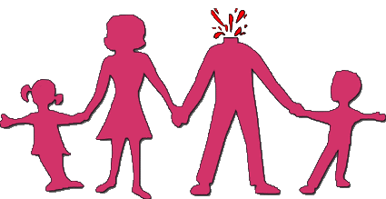
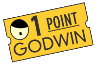

J’ai appris hier qu’une émission était organisée sur le thème “homos, bis, et autres trans, ou hétéros”. Sans mathématiques ! Je me devais d’intervenir, pour que cette émission ait un semblant de rigueur dans la définition des termes. Après tout, comme l’a dit Galilée, la nature est écrite en langage mathématique.
Commençons par les bis. Nous laisserons les tris de côté pour aujourd’hui, même ils sont également passionnants….
Bi, comme son nom l’indique, c’est 2, les choses qui vont par 2. Bissectrice, qui coupe un angle en deux parties égales, bissection, découpe en deux parties d’un objet quel qu’il soit, les birapports, qui vérifient la fameuse propriété d’invariance (pour mémoire : “Le birapport de quatre points reste conservé dans une collinéation perspective.”)
Et il faut naturellement parler de la bijection, notion clé qui permet de savoir par exemple qu’il y a plus/moins/autant de personnes que de chaises ici sans avoir besoin de les compter : il suffit en effet d’associer chaque chaise à une personne, et chaque personne à une chaise, en demandant à chacun de s'asseoir, pour voir si des chaises restent vides ou si au contraire des personnes se plaignent de rester debout, pour conclure immédiatement.
Beaucoup plus fort, l’utilisation extrêmement astucieuse qu’en a faite Georg Cantor, permettant de démontrer notamment qu’il y a autant de nombres entiers que de nombres pairs, ou beaucoup plus fort, que de nombres rationnels, je m’arrête je m’emballe, je vous renvoie à l’épisode de Nico sur le sujet.
Passons aux homos, qui font encore bien mieux ! Les homos permettent de révéler que les deux mondes qu’ils relient ont une même structure, qui peut être parfois largement cachée.
Ainsi, deux triangles homothétiques sont simplement une version agrandie ou réduite d’un même triangle. Le “théorème des triangles homothétiques”, que certains appellent, on ne sait trop pourquoi, théorème de Thalès, ne dit rien d’autre : les deux triangles concernés ont, comme le dit l’étymologie du mot, la même tête (homo, même, et tétis, tête, bien sûr)
Je manque de temps pour aborder les autres homos : Homomorphisme, homographie, homologie, homotopie au sens combinatoire, bien sûr, équivalence homotopique, et puis les trans : transconjugué, transfini, translation, transitif, transposition, transvection, c’est extrêmement frustrant, mais encore une fois, je n’ai été prévenu qu’au dernier moment.
Sur les hétéros en revanche, rien, absolument rien. En même temps, c’est vrai qu’on ne voit pas bien l’intérêt qu’il y aurait à faire ressortir les différences...
Voilà, je pense que maintenant l’émission peut commencer, je suis sûr que cet éclaircissement du vocabulaire permettra, comme toujours, d’éviter les malentendus, les propos hors sujet et autres délires de personnes qui cherchent avant tout à ramener leur fraise à tout propos.
Ami homophobe, tu trouves que personne ne te prend vraiment au sérieux et tu cherches à peaufiner tes arguments en leur donnant une caution scientifique? N’aie crainte, Podcast Science est là pour t’aider ! Suis le son de notre voix, tu verras, tout va bien se passer. Récemment, tu as voulu convaincre ton entourage que l’homosexualité n’était pas naturelle et que seule l’hétérosexualité l’était. Mais tu as raison, l’hétérosexualité est naturelle. Prends les guêpes des figues par exemple, ces guêpes qui, pour survivre doivent nécessairement pondre dans un fruit immature de figuier pour que leur progéniture se développe dans les tissus du végétal. Tu vois pas le rapport ? Et bien ces guêpes-là sont foncièrement hétérosexuelles, et, le plus naturellement possible, dans le fruit en formation, frangins et frangines guêpes vont copuler ensemble, Lannister style.
Quoi de plus naturel aussi que les rapports hétérosexuels des mantes religieuses qui se concluent généralement par la décapitation du mâle pour assouvir l’appétit féroce de la femelle. Je me suis d’ailleurs permis de modifier ton logo de la manif pour tous pour lui donner un ptit côté naturel à la mante religieuse du plus bel effet en remplaçant l’image du père avec un décapité, j’espère que tu apprécieras!
La nature, c’est aussi l’accouplement des girafes pour lequel le mâle va donner des coups de tête dans le popotin d’une femelle pour stimuler son envie d’uriner, urine qu’il va s’empresser de goûter pour déterminer si la femelle est prête à être fécondée.
Tu l’auras compris: inceste, cannibalisme et golden shower sont également très naturels! Et bon on a parlé de relations intraspécifiques mais il faut savoir que de nombreux animaux franchissent aisément la barrière de l’espèce et pénètrent ardemment les territoires inexplorés à travers les groupes taxonomiques. Doit-on citer les exemples des chimpanzés utilisant des grenouilles comme moyen de se masturber, ou des otaries qui se défoulent sur des manchots, ou suffit-il d’évoquer la prévalence de maladies vénériennes uniquement contractables entre humains et bétail pour rendre compte de la banalité de ce genre de comportement?
Merci Taupo de nous rappeler les douces merveilles du comportement animal 100% terroir bien naturel. la nature est un exemple pour nous tous ! L’Homme est un dégénéré sans repère naturel !
– Maman ! (pré ado tirant sur la jambe de sa mère)
– mais non pas spécialement toi hubert !
– Dégénérée, c’est abusé, je veux aller à l’école !
– Écoute mon chéri, on t’a déjà expliquer avec papa que ce concept d’école n’est pas très naturel, va falloir oublier, d’ailleurs le concept même de concept n’est pas très naturel, tu le concéderas
– Mais je veux apprendre à lire !
– L’alphabet cette dégénérescence ! Tais-toi tu me fais honte, tu te comportes comme un intellectuel
– J’en ai marre je veux être sapiens pas bonobo de mes deux !
– Ferme ta bouche je te dis sinon j’envoie ton père te casser la colonne en deux, il va encore croire que je passe trop de temps à m’occuper de toi et pas assez à copuler pour répandre ses gènes dans la population. D’ailleurs demain, on va d’abord avec ta soeur à un atelier « tisse ta liane pour te masturber sans ton père » comme le font les bonobos et puis au goûter on finira le placenta de feu ton frère mort d’une gangrène bien naturelle. Tu aurais été fière de lui Rho et puis arrête avec toutes ces voyelles ! Franchement c’est pas naturel !
Je crois que l’on a compris, il n’y a pas vraiment d’argument valable pour dire que ce qui serait « naturel » serait socialement acceptable et aucun non plus pour considérer que ce qui serait « non-naturel » ne devrait pas être présent dans nos sociétés.
D’ailleurs, pour rajouter à l’absurde, la critique du « ce n ‘est pas naturel » se retrouve souvent , dans la même phrase, associée au reproches d’avoir un comportement bestial. Alors ‘faut être naturel mais sans être un gros bestiau. Ça ressemblerait pas à une construction artificielle et absconse le concept de « naturel » ? Le concept de naturel ne cacherait pas t-il pas être en réalité un nauséabond idéal de pureté ? D’ailleurs les grecs anciens jugeaient l’homosexualité supérieure à l’hétérosexualité car, pensaient-ils, non présente dans la nature, et donc permettant de nous élever de la condition animale..d’autres, à partir de la même idée reçue (l’homosexualité n’existe pas chez les animaux) verront cette orientation comme impure, devant être éliminée. POINT GODWIN atteint.
Bon, du coup mon ami homophobe, ton argument du “l’hétérosexualité, c’est naturel”, j’ai l’impression que tu as plutôt envie de l’abandonner, changer ton fusil d’épaule, et essayer de persuader ton entourage que l’homosexualité n’existe pas dans la nature. Ben mon con, c’est pas ton jour de chance : des comportements homosexuels ont été observés chez des milliers d’espèces animales différentes et que ce soit pour l’activité sexuelle, les parades amoureuses et même le soin parental! Et ce ne sont pas bien entendu des relations exclusives entre mâles: prends les bonobos par exemple. (je sens de toutes façons que tu ne peux considérer cette expression que figurativement). Ils sont parmi nos plus proches cousins et passent la plupart de leur temps s’exercer à la chose dans un but non reproductif. Pour le coup (le bon coup), les femelles passent un temps considérable à se masturber les unes-les autres, souvent jusqu’à l’orgasme. Les mâles sont moins enclins à folâtrer mais il n’est cependant pas rare de les voir s’embrasser, se masturber voire s’exercer des fellations. Cette tendance est encore plus exacerbée chez les dauphins où près de la moitié des mâles interagissent sexuellement avec d’autres mâles. Ce genre de comportement ne semble cependant pas complètement définitif et souvent, les relations homosexuelles renforcent des liens sociaux entre individus et peuvent même faciliter a posteriori leurs chances de se reproduire. Cela rentre donc dans un cadre évolutif théorique testable et offre une explication d’avantage adaptatif à l’homosexualité. D’autres cas comme chez les insectes, illustrent plutôt des comportements homosexuels issus d’approximations de l’évolution où des mâles incapables de discriminer les phéromones de leurs partenaires choisissent de niquer tout ce qui passe à défaut de passer du temps à déterminer le sexe de son partenaire. Ce genre de phénomène peut même être provoqué non pas par un contexte génétique mais une influence environnementale, ce qui a été testé en rendant des mouches du vinaigres bourrées qui devenait parfaitement bisexuelles.
On trouve plus rarement des cas de préférences homosexuelles longue durée et exclusive : chez des béliers
Partie limites et difficultés d’étudier les comportements sans anthropomorphisme
Si la première mention de l’homosexualité dans le règne animal remonte à la Grèce antique, les premières études scientifiques les mentionnant remonte à 1764. Et depuis lors, de nombreux écueils n’ont pas su être évités. Tout d’abord,il fallait l’observer car toute relation était supposée hétérosexuelle (et oui c’est pas forcement de deviner le sexe d’une baleine à 50 m de profondeur) et puis après constat, il fallait oser en parler. Et oui de l’aveu de nombreux zoologistes, l’autocensure est courante, de peur de ne pas maîtriser les réactions homophobes des lecteurs et des confrères. Car décrire le phénomène c’est prendre le risque d’être soupçonné ou d’être interrogé sur ses motivations de rapporter précisément ces faits-là, d’avoir à se justifier sur sa propre sexualité. Et puis, lorsque l’on a le courage d’en parler, il n’est apparemment pas aisé de s’abstraire d’un regard anthropomorphique et moralisateur.
Sisi , mon histoire préférée (et symptomatique) c’est celle de ce chercheur qui décrit les comportements homosexuels des papillons azurés de l’atlas marocain en 1987.
Déjà courageux le type, il intitule son article « une note sur la baisse apparente des standards moraux chez les lepidoptères » ..les standards moraux chez les lépidoptères.
Genre: Oui bonjour je suis un lépidoptère bien éduqué qui ne butine que des fleurs consentantes moi, mais mon voisin, il n’a pas les mêmes valeurs, c’est pas que du nectar qu’il butine ! !
Mais en plus, les observations de l’entomologiste « scout toujours », seront lors de sa publication, préfacées par la suivante et pontifiante déclaration:” Triste signe de notre temps, les journaux nationaux regorgent trop souvent de détails scabreux de ces horribles offenses sexuelles commises par notre notre espèce Homo sapiens, révélateurs du déclin des standards de la morale. Malheureusement, dernièrement la littérature entomologiste ne semble pas déroger à notre époque »
Ambiance…
Puis finalement quand on parle de comportements homosexuels chez les animaux c’est en utilisant des termes biaisés et plein de jugements moraux comme avec les mots péchés , perversion, résultat du confinement, une phase ado. etc…. Les études ne peuvent se détacher d’un certain anthropomorphisme. Ainsi 2 femelles renardes engagées dans des activités homos ont été décrites comme ayant « un comportement rabelaisien » en jugeant ainsi ces comportements, les scientifiques ont beaucoup de difficultés à rendre compte de la diversité des comportements homosexuels. D’ailleurs, aussi variés chez l’Homme que chez les autres espèces (si l’on prend en compte, l’âge des partenaires engagés, leur orientation sexuelle, le consentement, les liens de parenté entre les intéressés, les statuts sociaux…) Ils faudrait en réalité parler DES HOMOSEXUALITES.
Enfin lorsque des zoologistes décrivent des comportements homoS, ils ont tendance à vouloir les justifier en dehors de toute rigueur scientifique. Mon exemple préféré (oui , encore) c’est celui de ce zoologiste qui en observant 2 males ourang outans se suçant réciproquement, justifie ce comportement comme « non sexuel » mais « nutritif ».
Ou encore ce scientifique qui en observant deux jeunes lamantins se branler mutuellement, préférait voir ça « comme un concours d’endurance ».
Bon allez, faut qu’on arrête de te charrier un peu. En fait, il existe bel et bien dans la nature un moyen pour que tu ne te retrouves pas confronté à des homosexuels, des espèces animales chez qui les homosexuels n’existent pas. Intéressé? Et bien mon ami, il faudrait alors que tous les humains deviennent des hermaphrodites! A la manière d’un grand nombre de gastéropodes, on se retrouverait avec des fabriques à sperme et ovules. Faut pas croire qu’on se retrouve sortie de l’auberge pour autant parce qu’il reste quand même l’enjeu du transfert équitable des ressources investies dans la production des ovules et des spermatozoïdes. Si je te pompe tout ton sperme, y’a intérêt à ce que je puisse arroser tous tes ovules, OK! Pour pas se faire baiser tout en baisant, des gastéropodes ont développé un système où ils se poignardent avec des dards d’amour pour favoriser la dissémination de leur semence: du coup, ça t’irait?
Y’a encore plus radical comme solution en optant, comme certaines étoiles de mer hermaphrodites, à la fécondation externe, soit en ne se reproduisant que de manière asexuée.
Finalement, le monde qui te permettrait d’éviter d’avoir à te confronter à l’homosexualité, c’est celui dans lequel il n’y a pas de sexualité.
Alors tu veux vraiment prendre la nature comme règle, ben courage mon gars parce que la nature elle n’a pas de règle et pas de morale. Le vivant parfois n’a pas de sexe, ne fait pas de sexe et quand il en a, et quand il en fait, c’est un gros bordel dans la sexualité. D’ailleurs, on a parlé d’homosexualité et d’hétérosexualité au sein d’une même espèce. C’est quand même ne pas avoir l’esprit très ouvert vous ne trouvez pas ? Vous faites pas du sexe avec des drôles de bestioles ? Ben moi si, je l’avoue. Je fais des trucs dégueulasses. Je fais du sexe avec des bactéries avec des virus et encore moi je suis soft… Oui parce que pour un biologiste, on peut définir comme sexuel tout échange de gène. Alors quand un virus me pénètre en me laissant comme cadeau des petits morceaux de son adn dans celui de mes cellules, on peut dire qu’on a fait du sexe. D’ailleurs il y a des bactéries qui font du sexe avec les cousines mortes, pour leur pécho des gènes intéressants.. où il y a du gène il y a du plaisir, ou il de la nature, il y a une grosse touze.
Oui, je l’avoue je suis biosexuelle et biophile.
Avant de parler d’orientation sexuelle, il faut parler de genre. Dans le genre, on peut distinguer l’identité de genre et l’expression du genre. Les deux sont différents, non seulement entre eux mais aussi différents du sexe.
Le sexe correspond aux caractéristiques biologiques, c’est à dire les organes sexuels, les hormones et les chromosomes.
(I) La plupart des gens ont un sexe que l’on qualifiera de féminin ou masculin, mais ce n’est pas le cas de la totalité de la population. Certaines personnes ne rentrent pas dans ces catégories (comme par exemple les XXY), ce sont les intersexes.
L’identité de genre correspond au genre auquel la personne s’identifie. Ce genre peut être homme, femme, les deux ou ni l’un ni l’autre.
Souvent, l’identité de genre d’une personne correspond au genre attribué à la naissance, on dit alors que la personne est cis-genre.
(T) Parfois ce genre ne correspond pas au genre attribué à la naissance, on parle alors de transgenre.
Les transgenres peuvent être des hommes, des femmes, les deux (androgyne), ni l’un ni l’autre (agenré) ou même changé de genre (fluide).
L’expression du genre désigne la manière dont on exprime ce genre, par les vêtements, les actions… En gros, l’expression du genre dépend énormément de la société.
Après cette petite parenthèse sur le sexe et le genre, on va pouvoir parler d’orientation sexuelle :
Selon Wikipédia,
« L'orientation sexuelle décrit un mode durable d'attirance pour le sexe opposé, le même sexe, ou les deux sexes »
, mais c'est assez restrictif. Pour être plus précis, on pourrait dire, que
l'orientation sexuelle décrit un mode durable d'attirance pour un, plusieurs ou aucun genre(s).
On passe donc d'une définition, qui en plus de faire l'amalgame entre le genre et le sexe, ne permet d'identifier que 3 orientations sexuelles, à une qui peut en identifier une infinité.
On peut alors dire qu'il y a autant d'orientations sexuelles qu'il y a de personne pour les définir. Néanmoins, si l'on veut les nommer, on peut les regrouper en 4 groupes (voire beaucoup plus) :
L'hétérosexualité : Tous le monde connaît cette orientation sexuelle. C'est celle qui consiste à être attiré par le genre opposé.
(L et G) L'homosexualité : Celle-ci aussi est très connu puisque c'est celle qui consiste à être attiré par le même genre.
Si l'on se contente de ces deux là, comme certains le font, on arrive sur une binarité de l'orientation sexuelle. Cependant cela ne convient pas à tous le monde.
Par exemple, à la fin des années 1940, Alfred Kinsey (entomologiste et zoologiste), s’intéresse au relation entre hétérosexualité et homosexualité. Il établi une échelle des orientations sexuelles avec a un bout l'hétérosexualité et à l'autre bout l'homosexualité.
(B) A milieu de cette échelle on retrouve donc la bisexualité, qui consiste à être plus on moins également attiré par le même genre et le genre opposé.
Avec ces trois orientations sexuelles et le continuum qui existe entre elles, on arrive bien à une infinité d'orientations sexuelles. Mais, encore une fois, ce n'est pas suffisant pour définir toutes les orientations sexuelles.
(A) Il existe des personnes qui ne peuvent pas se placer sur l'échelle de Kinsey car cette dernière exige que l'on soit attiré sexuellement par un ou plusieurs genres, or certaines personnes ne sont attirées par personne. Il faut donc ajouter aux orientations précédentes, l'asexualité qui comme sont nom l'indique consiste a ne pas ressentir d'attirance sexuelle dirigé vers un genre.
D'après une étude de 2004 , ils représenteraient 1 % de la population.
(P) À ces 4 orientations sexuelles, ont peut ajouter la pansexualité qui consiste à être attiré par des gens indépendamment de leur genre.
Pour mieux comprendre, on peut faire une analogie avec la nourriture :
Les hétérosexuels aiment les pâtes, alors que les homosexuels aiment les pizzas. Les bisexuels, eux, aiment les deux, pâtes et pizza mais peuvent avoir une préférence. Les pansexuels veulent juste manger quelque chose de bon sans avoir de préférence pour un plat. Les asexuels n'aiment pas la nourriture qu'on leur propose. Et les homophobes trouvent que la pizza c'est dégoûtant car il y a du fromage dessus en oubliant de préciser qu'on peut faire des pizzas sans fromages et mettre du fromages sur les pâtes.
Pour finir, on peut aussi parler de l'orientation romantique, qui peut être différente de l'orientation sexuelle, c'est même d'ailleurs assez fréquents chez les asexuels.
Et si vous êtes un peu perdu, c'est normal, c'est un sujet extrêmement compliqué. Les catégories d'orientations sexuelles que je viens de présenter sont loin d'être complètes, puisse qu'elles existent tous dans des spectres, personne n'est identique.
(Q) On peut même préciser que dans l'acronyme le plus long de LGBT, c'est à dire LGBTQIAP, le Q représente les « questionning », c'est à dire les gens qui ne savent pas vraiment où se placer dans tout ça.
Une dernière chose, c'est bien de connaître les différents genres et orientations sexuelles, mais il n'y a aucune obligation à se définir selon l'un d'eux.
Les intervenants précédents vous ont montré que le sexe est une invention de la nature beaucoup moi simple que nous avons tendance à le croire intuitivement. Il faut donc se méfier de ce que nous croyons savoir à ce sujet.
On m’a invité à vous parler de génétique et d’homosexualité. On va se demander s’il existe oui ou non, des déterminants génétiques à l’orientation sexuelle.
Sur ce sujet il y a plusieurs questions qui se posent. Je vais en poser quatre, volontairement naïves:
1 — Y a-t-il un gène de l’homosexualité ?
2 — En dehors des gènes, qu’est-ce qui pourrait en être la cause ?
3 — Si c’est bien un gène, comment se maintient-il au fil des générations ?
4 — Si c’est un gène, encore une fois, doit-on craindre des idées eugénistes ?
Et je vais tenter de vous montrer qu’il faut se placer dans une perspective évolutive pour apporter des éléments de réponse à ces questions. Pour cela il faut comprendre tout de suite que l’échelle à laquelle l’évolution fonctionne, ce n’est pas l’individu, c’est la population, le pool génétique à l’intérieur duquel se réalise le brassage des formules génétiques qui sont ensuite passées au crible de la sélection naturelle.
C’est une question naïve, parce que personne ne se demande s’il existe un gène de l’hétérosexualité ou de la bisexualité, ou de la préférence pour les petites brunes ou les grands roux. Et pourtant nos gènes étant la feuille de route à partir de laquelle s’échafaude notre corps dans lequel sont inscrits nos instincts, forcément il existe in fine une population de gènes impliqués dans la modulation de tous ces comportements sexués.
Les études scientifiques qui cherchent à comprendre comment la génétique influence la sexualité ont mis en évidence ces dernières décennies un certain nombre de zones sur nos chromosomes (8 en particulier) qui sont fortement corrélées avec l’orientation sexuelle. Cela veut donc dire que NON, il n’y a pas 1 gène de l’homosexualité, mais OUI, le terrain génétique a un rôle dans l’homosexualité.
On ne sait pas encore dans le détail quelle chaine d’évènements relie à une extrémité le terrain génétique et à l’autre le comportement de l’individu, mais dorénavant, c’est établi : il existe des déterminants génétiques, et l’orientation sexuelle n’est donc pas un choix ni le résultat d’une influence sociale.
Le phénotype, c’est-à-dire l’ensemble des caractères visibles de l’organisme, est le résultat de l’interaction du génome avec son environnement, et donc l’homosexualité pourrait très bien être le résultat d’une influence environnementale au cours du développement.
Comme l’expliquait Irène dans l’épisode 185, les hormones et l’environnement maternel prénatal sont des suspects que la science surveille de près. Et ainsi, on sait que l’ordre de naissance peut jouer un rôle. Les chances ou les risques d’être homosexuel pour un homme donné augmentent de 33% pour chaque frère plus âgé que lui né de la même mère. La différence se joue au niveau de l’environnement maternel, et sans doute en relation avec le système immunitaire de la mère (Blanchard 2001). Ce fait est d’ailleurs très intéressant parce qu’il a été montré que les mères des hommes homosexuels ont tendance à avoir plus d’enfants que les autres, mais c’est aussi le cas de leurs tantes. Du coup l’hypothèse génétique est renforcée3. Et on en arrive à la troisième question, celle qui me semble la plus intéressante.
Si les homos ne peuvent pas se reproduire, les gènes qui rendent ceux qui les portent homos devraient disparaitre, non ? Eh bien c’est là qu’il faut prendre du recul et cesser de penser à l’échelle des individus. On observe dans la nature, chez plus de 1500 espèces à ce jour des comportements homosexuels. C’est donc un caractère qui est largement distribué chez les animaux. Et donc, par définition, il n’est pas contre-nature.
Pour expliquer cette large présence, nous avons deux possibilités : ou bien c’est une convergence évolutive et l’homosexualité est apparue séparément chez toutes ces espèces, ou bien c’est un trait ancestral qui s’est maintenu dans toutes ces lignées depuis plusieurs dizaines ou centaines de millions d’années.
Dans un cas comme dans l’autre on se retrouve devant l‘énigme d’un caractère qui rend de facto stérile et qui est pourtant conservé par l’évolution au fil des générations. C’est étonnant, mais pas tant que ça, et les fourmis ouvrières, ou bien les termites ou encore les abeilles pourraient nous dire que c’est un peu ce qu’elles vivent au quotidien : chacune d’entre elle est stérile, et pourtant leur espèce est florissante.
Caractère ancestral ou convergence évolutive, dans un cas comme dans l’autre on est en présence d’un équilibre dynamique dans la distribution des compositions génétiques au sein des populations. Voici comment il fonctionne en théorie : si un ensemble de déterminants génétiques rendent des femmes plus fertiles, alors ces déterminants, disons des gènes pour aller vite, vont avoir tendance à se fixer dans la population au fil du temps. Si ces versions de gènes, quand ils sont présents tous ensembles dans le corps d’un individu le rendent homosexuels, alors à l’inverse ils auront tendance à disparaitre. Ces deux tendances antagonistes, si leurs forces ne sont pas totalement déséquilibrées vont aboutir à un équilibre : la proportion finale de ces gènes dans la population sera celle qui permet leur transmission avec un taux suffisamment bas pour ne pas produire trop d’individus stériles (car homos) et suffisamment haut pour rendre les femelles plus fertiles.
Pourquoi un tel équilibre est-il favorisé ? Parce que c’est celui qui garantit la maximisation de la transmission des gènes dont nous parlons. Pour aller plus loin, je vous renvoie vers le livre de Richard Dawkins Le gène égoïste.
Dans l’absolu, on peut imaginer que soient mis au point des tests qui permettent de dire aux parents si leur enfant est porteur des marqueurs génétiques corrélés à l’homosexualité. Et dans un monde ou l’homophobie est toujours tenace, cela laisse imaginer des cas d’interruption de grossesse en vue d’éviter de mettre au monde un petit homosexuel… Mais il y a plusieurs raisons pour penser que cela ne se produira pas.
— D’abord l’orientation sexuelle n’est pas binaire, et l’échelle de Kinsey nous explique qu’il y a un continuum entre homo et hétéro en passant par cinquante nuances de gris… au moins.
— Ensuite on a vu que l’environnement prénatal avait une influence, et par conséquent le génome seul ne pourra sans doute jamais suffire à prédire l’orientation du futur adulte.
Cela fait deux bonnes raisons scientifiques de ne pas chercher à réaliser ce genre de test : ils seront inefficaces. Encore faut-il que les gens soient sensibles aux arguments scientifiques…
— Il y a une troisième raison. Une raison éthique. Notre société devra décider tôt ou tard si les parents ont le droit de « choisir » les caractéristiques de leurs enfants comme un produit sur un catalogue de cuisine aménagée. Rationnellement on doit répondre non, pour tout un tas de raisons. Et j’aimerais citer encore une fois l’évolution, qui nous a appris que la meilleure des stratégies est toujours de laisser au maximum de formules génétiques la chance de faire leurs preuves au contact du monde.
C’est pourquoi une société dirigée par la raison et non par l’idéologie ne peut pas sombrer dans l’eugénisme. Et c’est pour cela qu’il faut laisser aux chercheurs le droit d’étudier ces questions et de comprendre ce qui fait que nous sommes qui nous sommes. L’homophobie n’est jamais le produit de la connaissance, elle est le produit de l’ignorance.
Blanchard R. 2001. Fraternal Birth Order and the Maternal Immune Hypothesis of Male Homosexuality. Hormones and Behavior 40, 105–114. http://www.sciencedirect.com/science/article/pii/S0018506X01916812
Iemmola F. & Ciani A.C. 2009. New Evidence of Genetic Factors Influencing Sexual Orientation in Men: Female Fecundity Increase in the Maternal Line. Archives of Sexual Behavior 38, 393-399. http://link.springer.com/article/10.1007/s10508-008-9381-6
Une étude sur la drosophile qui vient de sortir montre un phénomène assez similaire à celui observé chez l’homme. Les lignées produisant des mâles avec des comportements homosexuels produisent également des femelles plus fertiles que les autres. http://rspb.royalsocietypublishing.org/content/282/1809/20150429 Hoskins et al. 2015 A test of genetic models for the evolutionary maintenance of same-sex sexual behaviour
Franck, tu n’es pas un spécialiste de l’orientation sexuelle, mais tu y as réfléchi et consacré quelques billets et articles
- http://franck-ramus.blogspot.com/2015/06/quand-les-bases-biologiques-de.html
- http://www.pseudo-sciences.org/spip.php?article2350
En revanche, tu es un spécialiste des sciences cognitives. Nous vous avions d’ailleurs reçu dans l’épisode 204 il y a quelques mois pour que tu nous parles du sexe du cerveau, soit les différences observables entre les cerveaux des femmes et les cerveaux des hommes.
Ce que j’avais retenu de ton intervention, c’est qu’il y a des différences - qui ne sont pas toujours celles qu’on croit quand on n’y connaît rien - et qu’aucune de ces différences ne justifie quelque discrimination que ce soit. Tu as aussi à cette occasion-là effleuré la question de l’orientation sexuelle d’un point de vue neuro-cognitif et c’est cela qui nous a donné l’idée de t’inviter aujourd’hui.
Thomas vient de nous parler des prédispositions génétiques, Irène nous avait présenté un dossier sur les hormones sexuelles (épisode 185) et qu’elle avait elle aussi pas mal parlé du rôle du dosage subtil des hormones sexuelles chez le fœtus, qui peut - dans une fenêtre temporelle précise - modifier l’architecture-même de certaines zones du cerveau et influencer l’orientation sexuelle.
Tout cela pour dire qu’on ne part pas tout à fait de zéro et qu’on devrait pouvoir entrer rapidement dans le vif du sujet.
En 2004 (je n’ai malheureusement pas de chiffre plus récent), 1/3 des Américains estimaient qu’être homo est un choix de vie. Un autre 1/3 des Américains pensaient que les homosexuels sont nés ainsi. 10 ans plus tard, on peut donner raison à un camp plutôt qu’à l’autre ?
Oui, en gros. Bon, c'est difficile de dire que les homosexuels sont nés homosexuels car à la naissance, ils n'expriment pas d'orientation sexuelle mais il y a quand même pas mal de données qui suggèrent qu'une bonne partie des facteurs qui déterminent l'orientation sexuelle sont précoces ; certains sont génétiques, certains sont pré-nataux, hormonaux ou immunitaires, ce qui n'exclut pas évidemment qu'il puisse y avoir des facteurs plus tardifs - il y en a aussi - mais de ce qu'on sait à l'heure actuelle, l'avantage est plutôt aux facteurs précoces. Et par ailleurs il y a aussi toutes les données issues des études de facteurs environnementaux, sociaux, etc. Et qui ont finalement abouti à la conclusion que l'orientation sexuelle exprimée par un individu, qu'elle soit homo ou hétéro, c'est quelque chose qui a l'air d'être très stable, finalement au cours de la vie (homo ou hétéro ou bi ou n'importe où dans le continuum, évidemment, ce n'est pas binaire). Ça a l'air d'être très stable au cours de la vie, et ce n'est pas quelque chose qu'on peut modifier comme ça. Il y a plein de gens qui ont essayé de changer l'orientation sexuelle des autres et qui ont simplement échoué. À ce jour, personne n'a trouvé une méthode pour rendre les homos hétéro, par exemple. Donc c'est quand même une indication assez forte que, finalement, c'est déterminé assez précocement et cela ne bouge plus trop.
Y a-t-il des précurseurs de l’homosexualité que l’on peut repérer dès l’enfance ?
Oui et non. Dans l'enfance, ce que l'on peut repérer, ce sont les enfants qui ont un comportement qui n'est pas tout à fait conforme à leur sexe tel qu'il est identifié. Il y a des garçons qui se comportent de manière plus féminine que la moyenne des garçons, il y a des filles qui se comportent de manière plus masculine que la moyenne des filles. Dans les études de recherche, en anglais, il y a un mot de jargon pour ça : gender non-conformity ( https://en.wikipedia.org/wiki/Childhood_gender_nonconformity ) . C'est un peu ridicule de le formuler comme ça, mais bon, voilà... Ils ne sont pas tout à fait conformes à leur genre et ces caractères-là pendant l'enfance sont corrélés avec une non-hétérosexualité à l'âge adulte. C'est une corrélation, ce n'est pas non plus une détermination, ce ne sont pas tous les garçons qui ont des comportements plus féminins dans l'enfance qui deviennent homosexuels, et vice-versa ; il y a des gens qui deviennent homosexuels et qui n'avaient pas d'expression du genre différente pendant l'enfance, mais bon, voilà, il semble qu'il y ait un lien statistique entre les deux et à ma connaissance, c'est la seule chose qu'on puisse vraiment détecter pendant l'enfance qui ait une certaine valeur prédictive.
http://www.ncbi.nlm.nih.gov/pubmed/18194004
À part les facteurs génétiques et hormonaux, quels autres facteurs sont connus impliqués dans la détermination de l’orientation sexuelle ?
Thomas a évoqué des facteurs immunitaires... L'histoire de quand plus il y a de grands frères portés par la même mère et plus le foetus mâle a de chances de devenir homosexuel.Et ça, la meilleure hypothèse qu'on ait à l'heure actuelle - bien qu'elle ne soit pas totalement prouvée, c'est que la mère aurait une réaction immunitaire au foetus mâle parce qu'il porte des antigènes mâles auxquels ses anticorps réagissent. Et que ces anticorps s'accumulent au fil des grossesses successives de foetus masculins et donc cela a un effet de plus en « agressif » on va dire sur les foetus mâles successifs. Donc, le 4e garçon de la fratrie est un peu « attaqué » in utero. Voilà pour les facteurs immunitaires. Pour ce qui est des facteurs environnementaux dans le sens psycho-sociaux, on ne peut pas dire qu'il y en ait un qui ait été vraiment identifié comme étant un facteur influençant l'orientation sexuelle. Entendons-nous bien, quand-même, on parle d'orientation sexuelle en tant que préférence pour des individus du même sexe ou du sexe opposé, à distinguer bien clairement des comportements sexuels évidemment. On peut avoir des comportements sexuels qui ne sont pas alignés sur les préférences qu'on a, pour des tas de raisons, évidemment. Et donc, les comportements sexuels sont totalement influencés par un tas de facteurs sociaux, en particulier : est-ce que l'orientation que vous avez est acceptée par la société ou pas ? Ça coule bien de source. Mais la préférence, qui elle est quelque chose d'interne, qui reste dans la tête de la personne, ça, on ne connaît pas vraiment de facteurs sociaux qui puissent l'influencer, ou en tout cas, ce n'est pas encore prouvé.
Et au niveau du cerveau à proprement parler, le cerveau des homos ? Est-ce qu’on a identifié, par exemple, une ou plusieurs zones dans le cerveau qui contrôlent l’orientation sexuelle ? Sait-on prédire, en observant un cerveau, de quel bord se situe son propriétaire ?
Alors, il y a quelques éléments. Pour commencer, il y a forcément une base cérébrale à l'homosexualité, puisqu'il s'agit d'une préférence cognitive et que ça induit des comportements et que la base du comportement, c'est le cerveau... S'il y a une différence au niveau comportemental, c'est qu'il y a une différence au niveau cérébral.
Après, toute la question, c'est de savoir lesquelles et puis comment ces différences apparaissent, évidemment. Donc, il n'y a pas énormément de choses solides à se mettre sous la dent ; ce qu'on a de mieux, ce sont des études qui ont été faites dans les années 80 de dissections (post-mortem évidemment) sur des personnes qui avaient donné leur cerveau, en particulier beaucoup d'hommes homosexuels américains qui étaient morts du SIDA dans les années 80 et qui avaient décidé de donner leurs cerveaux aux chercheurs. http://www.sciencemag.org/content/253/5023/1034.Short
Ces cerveaux ont été comparés à un certain nombre d'hommes hétérosexuels et, dans ces études de dissection, les chercheurs se sont concentrés sur l'hypothalamus ( https://fr.wikipedia.org/wiki/Hypothalamus ) qui est l'une des régions du cerveau qui est bien connue pour être impliquée dans le comportement sexuel, et on avait déjà pas mal d'études chez l'animal qui avaient bien décortiqué l'hypothalamus et les différents noyaux qui participent à l'orientation sexuelle, par exemple chez le rat, et en allant chercher directement ces noyaux-là, ces chercheurs ont mis en évidence qu'il y a un sous-noyau de l'hypothalamus - qui est déjà à la base plus gros chez les hommes que chez les femmes - qui, chez les hommes homosexuels, aurait une taille intermédiaire ou en tout cas soit égale à celle des femmes soit plus proche de celle des femmes que de celle des hommes. Ce sont des études qui n'ont pas vraiment été reproduites depuis les années 80 parce qu'on n'a pas refait des grandes collectes de cerveaux comme ça de personnes homosexuelles et parce que c'est un noyau qui est tout petit et qui n'est pas visible à l'IRM. Si c'était visible à l'IRM, ça ferait longtemps [que ce serait reproduit] et on aurait déjà des dizaines d'études qui auraient répliqué ce genre d'observations. Là, ça n'a pas été bien répliqué. Mais on a des données sur une centaine de cerveaux, quand même, ce n'est pas rien. On aimerait avoir plus de confirmations indépendantes.
Après, si on regarde des choses à un niveau plus macroscopique, quand on fait les IRM standard, ( https://fr.wikipedia.org/wiki/Imagerie_par_r%C3%A9sonance_magn%C3%A9tique ) , là, à ma connaissance, il n'y a rien eu de très très flagrant qui ait été observé et qui diffère fondamentalement entre les hommes homosexuels et les hommes hétérosexuels. Il y a peu de recherches sur les femmes homosexuelles malheureusement. En tout cas, pour ce qu'on sait du cerveau et des bases cérébrales de l'orientation sexuelle, il y a des différences en moyenne, mais il n'y a pas de différences telles que, en regardant le cerveau, on puisse faire une prédiction très claire de l'orientation sexuelle de la personne. Si on a une bonne mesure de ce noyau de l'hypothalamus, on peut éventuellement essayer de faire une prédiction qui va être un peu meilleure que le hasard, mais de là à classer les gens en homo ou en hétéro, ou quelque part ailleurs dans le continuum, on est loin loin loin d'avoir une telle précision.
Est-ce que tu sais si on a pu modifier l'orientation sexuelle d'animaux de laboratoire en agissant sur telle ou telle zone de leur cerveau ?
On peut la modifier soit en agissant directement sur les facteurs génétiques ; ça a été fait chez la drosophile : il y a un gène qui s'appelle fruitless. ( https://en.wikipedia.org/wiki/Fruitless_(gene) )
Si on le mute correctement, on obtient des drosophiles mâles homosexuelles qui essaient de monter les autres mâles. On sait le faire par manipulation génétique. On peut aussi rendre des rats ou des souris mâles homosexuels en modifiant leur milieu utérin. Typiquement en injectant des hormones sexuelles à la mère pendant la gestation. On connaît très bien les mécanismes neurobiologiques qui se modifient en réponse à ces facteurs hormonaux intra-utérins et on observe que, in fine, là aussi que les mâles ont des comportements sexuels plus orientés vers les mâles que vers les femelles.
Après, je n'ai pas connaissance, chez l'animal, que l'on ait modifié l'orientation sexuelle plus tardivement : une fois qu'on a un mâle normalement hétérosexuel, est-ce qu'on a réussi à le rendre homosexue ? Je n'ai pas connaissance. Ce n'est peut-être pas impossible de le faire par lésion de certaines régions du cerveau mais je n'ai pas connaissance des études.
Pour rebondir sur la dernière partie de la présentation de Thomas , est-ce que affirmer qu'il y a des bases biologiques précoces à l’homosexualité, c'est être pour ou contre homosexualité ? Ça favorise l'homophobie ou ça lui coupe l'herbe sous le pied ?
Ça n'a rien à voir ! Ce sont deux questions d'ordre totalement différent. Il y a une question de connaissance factuelle de l'état du monde : il y a quelque chose qu'on observe qui est l'orientation sexuelle qui varie entre les individus entre l'homosexualité exclusive et l'hétérosexualité exclusive. On peut se poser la question de cette diversité : pourquoi les uns sont comme ci, pourquoi les autres sont comme ça ? C'est une question purement scientifique. Pour le chercheur que je suis, ça paraît totalement légitime d'essayer d'y répondre, parce qu'on est curieux et on a envie de comprendre pourquoi on est tous différents et quels sont les facteurs qui nous ont rendus comme nous sommes. Cela relève purement de la connaissance scientifique. L'autre question qui n'a rien à voir est : est-ce que l'homosexualité est bien ou mal ? La science n'a rien à dire là-dessus, c'est une valeur que chacun détermine pour soi-même mais ce n'est pas une question de connaissance. La valeur que l'on accorde à l'homosexualité ou à l'hétérosexualité n'a pas de lien direct avec la connaissance qu'on a de ces facteurs biologiques ou sociaux ou quoi que ce soit d'autre.
Etudier les bases biologiques de l'homosexualité, ca n'est pas ou n'a jamais été guidé par une arrière pensée médicale de « traiter » les homosexuels ?
Si si, bien sûr ! Les motivations des chercheurs ou des médecins sont ce qu'elles sont, et on ne peut pas nier que certains ont cherché à comprendre les bases biologiques de l'homosexualité parce qu'ils pensaient que, peut-être, ils arriveraient à soigner le cerveau des homosexuels, ou qu'ils arriveraient à « screener » le génome des fœtus homosexuels pour éviter qu'ils naissent. C'est certain qu'il y a eu ce genre de motivations, mais il y a eu des motivations à peu près similaires chez des gens qui avaient une conception environnementaliste de l'homosexualité, et qui ont essayé de traiter les homosexuels pour les faire devenir hétérosexuels en manipulant des facteurs environnementaux, y compris en les tapant, par exemple, pensant que c'était quelque chose de malléable par des facteurs environnementaux. Il n'ont pas réussi pour autant. Pour moi, il y a eu de l'homophobie de tous temps, et les gens qui veulent opprimer les homosexuels, ils les opprimeront quoiqu'en dise la science, qu'ils se basent sur une théorie biologique de l'homosexualité ou qu'ils se basent sur une théorie environnementaliste ; ça va peut-être changer les moyens avec lesquels ils vont opprimer les homosexuels, mais ca va pas changer leur motivation primaire !
Est-ce que la science a un rôle à jouer dans la lutte contre l'homophobie ?
La science a un rôle à jouer dans le fait de fournir des connaissance les plus fiables possibles, et la connaissance peut servir à mieux respecter les gens qui nous entourent. Il y a eu un exemple assez frappant récemment : les scientifiques peuvent dénoncer quand ils sont instrumentalisés pour de mauvais motifs. On a vu ça en Afrique récemment : l'année dernière, le président ougandais a décidé de renforcer les lois pour l'oppression des homosexuels, de tous les comportements homosexuels. Déjà que la situation de l'homosexualité en Afrique, et en Ouganda en particulier, n'est pas rose… Il a décidé de renforcer l'oppression, parce que - soi-disant - il avait été conseillé par un panel de scientifiques ougandais, qui lui avaient dit que l'homosexualité n'est pas génétique, ni biologique mais que ce serait un choix. Et parce que c'est un choix, en avait-il déduit, c'est un mauvais choix et les gens sont responsables de leur choix et de leur comportement homosexuel, et donc, ils peuvent être condamnés pénalement. C'est vrai que, quand cette justification a été apportée, il y a quand même pas mal de chercheurs, y compris des chercheurs africains, qui se sont dit : « À la base, c'est une mauvaise représentation des connaissances scientifiques », parce que les connaissances scientifiques disent plutôt que l'homosexualité n'est pas un choix. De fil en aiguille, un certain nombre de chercheurs se sont pris en main. Le résultat, c'est que l'Académie des Sciences d'Afrique du Sud s'est auto-saisie et a formé un petit comité d'experts compétents en psychologie, en biologie, en sociologie, pour faire un état de l'art des connaissances sur les origines de l'homosexualité, de l'orientation sexuelle en général. Ils ont fait une revue complète de la littérature scientifique sur le sujet, et ils ont écrit dans leur rapport un résumé qui est disponible sur Internet, et que je vous engage à lire, parce qu'il est tout à lisible, il est très clairement écrit, il est très bien…
http://www.assaf.co.za/wp-content/uploads/2015/06/8-June-Diversity-in-human-sexuality1.pdf
Vous pouvez aussi le trouver sur mon blog (http://franck-ramus.blogspot.com/2015/06/quand-les-bases-biologiques-de.html ), j'ai fait un commentaire de ce rapport de l'Académie des Sciences Sud-Africaine. En gros, ils prennent la question de l'orientation sexuelle par tous les angles possibles, ils passent en revue les données génétiques, les données hormonales, les données cérébrales, les données sociologiques dans les différents pays d'Afrique. Ils concluent que l'homosexualité n'est pas un choix . C’est, de manière prédominante, des bases biologiques. Et donc, il n'est pas correct de représenter de manière fallacieuse la science sur les origines de l'homosexualité à l'appui d'une politique discriminatoire ou oppressive envers les homosexuels. Ils ont un peu mélangé les genres en essayant à la fois de défendre à la fois la condition des homosexuels en Afrique et de faire l'état de l'art scientifique, mais leur état de l'art scientifique est tout à fait correct. C'est un bon exemple, finalement, où l'on voit que le gens utilisent des connaissances sur les bases biologiques de l'homosexualité, pour contrer l'homophobie et défendre toutes les personnes non-hétérosexuelles (les LGBTI) dans leur rapport, y compris les transsexuels, les conditions intersexuées, bref, toutes les orientations possibles.
Ce rapport vient d'être publié, c'était il y a 10-15 jours... L'adresse de ton blog, si on veut le retrouver ?
Le plus simple c'est de taper mon nom sur Google, et puis ca sortira. (http://franck-ramus.blogspot.com/)
J'ai une dernière question technique, je tiens à profiter de tes connaissance avant de passer la parole au public. Thomas nous a expliqué comment le trait se maintenait dans la population, quand bien même les homos ont en moyenne moins d'enfants que les hétéros. En gros, les facteurs génétiques qui prédisposent à l'homosexualité masculine favorisent la fertilité chez les femmes de la famille, ce qui fait que l'une dans l'autre, en moyenne, les porteurs de ces gènes ont plus d'enfants. Est-ce qu'il y a d'autres facteurs qui expliquent que le trait se maintienne dans la population, alors que les homos passent, par définition, moins souvent leurs gènes à la génération suivante ?
A ma connaissance, il y a trois grandes hypothèses. Thomas en a mentionné une, qui est en quelque sorte ce qu'on appelle un effet antagoniste entre les mâles et les femelles. Il y a des données à l'appui de cette hypothèse, comme tu l'as dit tout à l'heure. On ne peut pas dire qu'elle soit totalement prouvée non plus, on a besoin encore de quelques recherches là-dessus. Une autre hypothèse, c'est quelque chose qui a une logique un peu similaire mais qui n'est pas antagoniste entre les mâles et les femelles, c'est tout simplement, chez tous les individus de la population, ce qu'on appelle l'avantage hétérozygote, parce qu'on a deux copies de chaque gène, et donc on peut avoir deux allèles différents de chaque gène. Ce qui arrive parfois, c'est qu'avoir un allèle d'un certain gène, c'est avantageux pour quelque chose. Par exemple, avoir un allèle d'un certain gène, ça confère une résistance au paludisme. Du coup, cet allèle est assez répandu dans les pays d'Afrique équatoriale. Mais une fois sur quatre, si on a les parents qui ont cet allèle-là, une fois sur quatre, on va récupérer les deux allèles en particulier, et il peut arriver qu'avoir les deux allèles au lieu d'un ait des effets avantageux. En l'occurrence, si on a les deux allèles, dont un confère une résistance au paludisme, on acquiert une maladie génétique qui est une maladie du sang qui est extrêmement grave, l’anémie falciforme. On a une tension entre les porteurs hétérozygotes qui sont protégés contre une maladie, donc qui ont un avantage reproductif, et les porteurs monozygotes, qui ont une maladie supplémentaire. On peut imaginer - mais cela n'a pas été prouvé - qu’il y ait une facteur génétique qui prédispose à l'homosexualité quand il est en deux exemplaires, mais qui a un effet avantageux quand il est en un seul exemplaire. Ça n'a pas été prouvé, il y a juste des simulations mathématiques qui montrent que ca permettrait plausiblement de maintenir un trait qui diminue la fertilité, comme l'homosexualité, à une certaine fréquence dans la population aux alentours de 1 à 5%, qui est à peu près ce qu'on observe.
Une autre hypothèse possible, c'est simplement que c'est pas parce que c'est génétique que c'est transmis par les parents. Entre les parents et les enfants, il y a des mutations qui surviennent et le taux de mutation qui impacte notre génome a été pas mal revu à la hausse ces dernières années depuis le séquençage du génome humain, et on s'est rendu compte qu'on est tous porteurs d'un certain nombre de mutations. Evidemment, ces mutations peuvent aussi affecter des gènes qui sont impliqués dans l'orientation sexuelle. Par conséquent, il se peut que simplement le taux de mutations spontanées, qui survient à nouveau à chaque génération, soit suffisant pour expliquer qu'un trait, même qui a un impact négatif sur la descendance, puisse se maintenir à une relativement basse fréquence dans la population.
Je ne sais pas si c'était très clair...
Super clair ! Un immense merci Franck.
Je vous en prie.
Et maintenant, les questions du public.
Bonjour. En fait j'ai une question qui est peut-être moins scientifique que sociologique. On a parlé au début de la différentiation qu'on pouvait observer précocement chez les petites filles et les petits garçons. Est- ce que vous pourriez nous citer des exemples un peu plus concrets que de dire « la petite fille est censée jouer à la cuisinière, le petit garçon aux petites voitures ». Est-ce qu'il y a des études qui sont basées sur des exemples un peu plus poussés que ceux-là ?
Disons... D'abord, il y a des cas extrêmes où l'enfant exprime vraiment explicitement un désir d'appartenir à l'autre sexe, ou une croyance d'appartenir à l'autre sexe. C'est très rare, mais ça existe. Ces enfants-là sont plus susceptibles de devenir des personnes homosexuelles plutôt qu'hétérosexuelles, même si ce n'est pas totalement déterministe. Et sinon, il y a tout un ensemble de comportements sexués qui ne sont pas juste le fait de jouer avec des petites voitures ou des poupées, mais globalement, parmi toutes les différences qu'on observe entre les garçons et les filles, dès la première section de maternelle, dans la cour de récréation, c'est clair qu'il y a du conditionnement social dans des trucs arbitraires comme le bleu et le rose, mais pas dans tout. Donc typiquement, les garçons sont physiquement plus actifs, ils vont avoir tendance à jouer spontanément à des jeux plus turbulents, plus compétitifs, que les filles, et les filles vont avoir tendance à jouer à des jeux pro-sociaux, plus coopératifs, etc. Il peut y avoir une partie de conditionnement social là-dedans, mais ce sont quand même des tendances très fortes qui sont observées à travers toutes les cultures. Sur ces comportements-là, effectivement, il y a des enfants qui ne rentrent pas dans le « stéréotype de leur genre ». C'est un facteur prédictif relativement modéré de l'orientation sexuelle.
Mais sachant que, malgré tout, il ne faut pas confondre l'identité de genre et l'orientation sexuelle. Ce sont évidemment deux choses bien distinctes, même s'il y a une certaine corrélation entre les deux.
Bonjour (...) Je me demandais, Est-ce qu'on a une idée de l'évolution de la population des personnes homosexuelles, en tout cas la part dans la population mondiale. Est-ce que c'est quelque chose qui a été constant au niveau de l'histoire ; est-ce qu'il y a eu des périodes où il y en a eu plus ? Est-ce qu'on a même des données là-dessus ou pas ?
C'est une bonne question ! Alors, évidemment, les données qu'on a là-dessus sont forcément limitées : sur la préhistoire, on ne peut pas savoir. C'est un point qui est justement abordé dans le rapport de l'Académie des Sciences Sud-Africaine, notamment parce que certains politiciens sud-africains, qui promeuvent l'homophobie, ont à un moment sorti l'argument que l'homosexualité, c'était une importation du style de vie occidental, ça ne correspondait pas au style de vie africain « normal » et historique, et que c'était une perversion importée de l'Occident. Dans ce rapport, ils passent en revue, notamment, tout un tas d'études anthropologiques qui montrent que des comportements et des orientations homosexuelles étaient documentés en Afrique, bien avant la colonisation ou, en tout cas, quand les colons européens sont arrivés, ils ont observé qu'il y avait déjà tout un tas de comportements homosexuels, qui étaient, de manière générale, bien souvent très bien acceptés par les populations locales dans leur culture locale. Ce sont en fait les missionnaires qui ont réprimés l'homosexualité en Afrique. Ce n'était pas du tout une importation des occidentaux. C'est un exemple pour dire que, pour ce qu'on en sait, l'homosexualité existait en Afrique bien avant qu'on aille les emmerder. Et, autant qu'on le sache : on la trouve partout dans le monde. Les études de prévalence, alors « combien de pourcents expriment une préférence qui n'est pas totalement hétérosexuelle... », c'est compliqué parce que ça dépend des définitions, ça dépend des seuils, ça dépend des populations qu'on interroge, ça dépend d'à quel point les populations sont prêtes à révéler leur véritable orientation sexuelle. Il y a plein de problèmes méthodologiques et, évidemment, sur l'échelle de Kinsey, on peut placer le seuil à différents endroits, soit ne compter que les homosexuels exclusifs, soit compter tous les gens qui ne sont pas hétérosexuels exclusifs. Bref, on obtient n'importe quel chiffre entre 1 et 5%. Autant qu'on puisse en juger, ces prévalences n'ont pas bougé, en tout cas sur le dernier siècle, et ne diffèrent pas significativement d'un pays à un autre, ou d'un continent à l'autre. Pour ce qu'on en sait, on aurait tendance à dire que c'est stable et que ni en augmentation démesurée ni en diminution. Ce qui est peut-être en augmentation, ce sont plus les comportements homosexuels dans la mesure où les sociétés deviennent plus libérales et acceptent plus l'homosexualité. Donc ça, ça fait que des gens qui étaient homosexuels en terme d'orientation dans leur tête, et qui ne l'auraient jamais exprimé en terme de comportement auparavant, maintenant ils le peuvent, effectivement ça augmente, mais l'orientation elle-même, on n'a aucune raison de penser que ça ait changé.
Merci beaucoup. Une question de Mél.
Question sur les hormones sexuelles. Comme on le sait, la testostérone engendre des comportements reproducteurs chez les mâles, et quand il y a des pics d'œstrogènes, et même c'est résiduel chez les être humains, en théorie, ça augmente l'envie de faire l'amour chez les femmes. Du coup, par rapport aux l'histoires des embryons qui viennent après une certaine portée de garçons, il y a un nouveau garçon qui arrive, Est-ce que ca pourrait plus ou moins détruire les prototesticules et sécréter moins de testostérone, et peut-être plus d'œstrogènes, et que ce soit cela qui féminise ou masculinise le cerveau ?
C'est une question intéressante, mais malheureusement, je ne suis pas sûr qu'on ait vraiment décortiqué l'effet immunitaire sur le cerveau des fœtus mâles. Est-ce que ca passe via leurs testicules et la production des hormones sexuelles, ou pas, c'est une hypothèse intéressante mais je n'ai pas la réponse.
(rires) Un champ d'étude qui s'ouvre !
« Je suis homo ». Trois mots. Parfois si difficiles à articuler…
Saviez-vous que jusqu’en 1990, l’homosexualité était classifiée comme maladie mentale par l’OMS ?
On a fait du chemin depuis, mais il y a encore du boulot. Se découvrir et s’accepter homo aujourd’hui et se construire sereinement n’est pas simple : même si on ignorait les horreurs proférées par les bigots de tout poil, « pédé » reste tout de même dans le top 10 des insultes spontanées en France.
Grandir homo dans un monde hétéro, pour le psychologue Alan Downs, auteur de The Velvet Rage, c’est avant tout grandir seul. Grandir sans modèles auxquels s’identifier.
On compare souvent l’homophobie au racisme. La comparaison a ses limites. Quand vous grandissez noir dans un pays blanc, ou l’inverse, vous vous sentez sans doute un peu extraterrestre, mais vous êtes en général entouré de gens qui vous ressemblent. Et même s’ils ne vous ressemblent pas, vous avez autour de vous des gens qui se sont interrogés sur votre différence et vos souffrances et qui font de leur mieux pour vous aider. Quand vous êtes homo, en revanche, vous êtes vraiment seul, littéralement, dans certains cas : en 2006, un jeune sur 4 annonçant son homosexualité aux Etats-Unis se faisait chasser du domicile familial !
Alan Downs est Docteur en psychologie, diplômé de l’Université du Nebraska en 1989.
Cela fait plus de 20 ans qu’il officie comme praticien clinicien. En tant que gay lui-même, séropositif, sauvé de justesse par l’arrivée des trithérapies - après avoir vu mourir pratiquement tous ses amis - il s’est spécialisé dans la question de l’homosexualité masculine et a écrit des livres de « self-help » destinés à cette population en particulier, notamment The Velvet Rage: Overcoming the Pain of Growing Up Gay in a Straight Man's World, cité par différentes sources comme l’ouvrage de référence en la matière, malheureusement introuvable en français.
Refusant pendant longtemps d’accepter son homosexualité, il a vécu dans le placard pendant des années et a même épousé une « Beauty Queen » - une reine de beauté - de son école, sincèrement convaincu - et l’environnement très religieux de sa famille y est sans doute pour beaucoup - que s’il trouvait la femme de sa vie et qu’il l’épousait, il changerait (plus de détails ici: http://www.oprah.com/oprahshow/The-Straight-Truth/4#ixzz3NHbdfYZA).
La théorie qu’il développe dans The Velvet Rage, postule que grandir homo (ou bi) dans un monde hétéro engendre forcément de la souffrance.
Selon l'auteur, les homos passent par 3 phases, qui expliquent beaucoup de leur traits communs (notamment les tendances à la dépression et au suicide / relations de coeur passionnelles et compliquées / besoin de perfection, besoin de suraccomplissement … )
Ces 3 phases — ou états — sont les suivantes :
- En phase 1, on est « Envahi par la honte » ;
- En phase 2, on cherche à « Compenser la honte » ;
- En phase 3, enfin, il s’agit de « Cultiver l'authenticité ».
Les phases 1 et 2, ne respirent pas le bonheur… Mais ça va mieux en phase 3.
Examinons tout cela en détail :
Chaque gay (ou bi) a grandi dans un monde qui n’acceptait pas, voire rejetait, un aspect fondamentalement constitutif de son identité. Chaque homo a compris très jeune qu'il y avait quelque chose de fondamentalement non-conforme en lui, et développé la croyance que ce quelque chose est fondamentalement inacceptable : on a vite fait d’intérioriser l’homophobie ambiante et d’adopter la croyance qu’on ne mérite pas d’être aimé.
Alors la plupart des homos cachent - au moins un temps - cet aspect de leur identité, juste histoire d’être aimés, en restant persuadés que si les gens les aiment, c’est parce qu’ils ne « savent pas ». En gros, la croyance pourrait être formulée comme ceci : « Il y a quelque chose en moi de tellement faux, que si vous le saviez, vous ne pourriez pas m’aimer ».
En phase 1, en tant qu’homo, on cherche à éviter la honte. Par le déni la plupart du temps.
J’ai une confidence à vous faire. Limite une déclaration de conflit d’intérêt : je porte deux casquettes ici. Celle du podcasteur scientifique consciencieux qui vous fait le compte rendu de la lecture d’un ouvrage académique. Et celle aussi d’un gay qui a réussi à vivre dans le déni pendant très longtemps et qui peut témoigner de comment on vit tout cela de l’intérieur. J’avais réussi à me convaincre que mon orientation était un détail, un problème secondaire ; ce n’est qu’à l’âge de 42 ans que j’ai finalement réussi à prononcer ces 3 mots. Je suis homo. Comme beaucoup d’autres (mais sans doute un peu plus longtemps), j’ai « contourné la honte » par le déni. D’autres le font par le suicide.
Pourquoi avoir honte ? Parce qu’on manque furieusement de modèles. Quand j’étais ado, dans les représentations populaires, un homo, c’était la Cage aux Folles. Un vrai homme, c’était un type comme John Wayne. Et on ne l’imaginait pas embrasser un autre homme. Vous voyez souvent deux hommes qui se donnent la main dans la rue ou qui s’embrassent dans la file du supermarché ?
On commence à voir ça et là des personnages gay dans les séries télévisées, on progresse sur ce front. D'ailleurs, il n’y a pas eu un mois en 2013 et 2014 sans qu’une célébrité du show-biz, du sport, ou même d’Apple ne fasse son coming-out. Mais on est encore loin, très loin, de permettre aux jeunes homos de s’identifier à des modèles positifs.
Les homos sont interdits du don du sang dans de nombreux pays, quelles que soient leurs pratiques sexuelles.
L’homosexualité est un crime dans près de 80 pays, parfois passible de la peine de mort.
Le Gay Bashing (c'est à dire taper sur un homo, lui briser quelques membres et quelques côtes, lui arracher quelques dents et si possible le défigurer, juste pour plaisir) est encore une réalité. Même ici. Même maintenant.
Et je ne vais même pas aborder la question des religions et de la haine ouvertement assumée que la plupart d’entres elles proclament, au nom de l’amour du prochain… Contrairement à ce qu’on pourrait penser en constatant les progrès autour de nous, les raisons d’avoir honte ne manquent pas.
La fin de la phase 1 est marquée par le Coming Out. Etape indispensable pour passer à la suite.
Une fois qu’on a accepté qu’on est gay, arrive la deuxième phase : « Compenser la honte ». On s’affirme. On fait tout ce qu’on peut pour se valider avec sa nouvelle identité, plus ou moins bien acceptée. On veut un maximum d’aventures, on veut être aimé par un maximum de conquêtes.
Les couples se font et se défont : on ne peut pas donner de l’amour quand on est profondément blessé dans ses émotions.
À ce stade, la passion est dévorante, dans ce qu’elle a de plus douloureux. On se sur-investit dans le travail. À la gym. On veut être le meilleur.
Atteints d’un syndrome de Peter Pan, on vise l’éternelle jeunesse. En phase 2, dans ma compréhension, on se trompe de combat : on essaie de se prouver qu’on est authentique, qu’on est à l’aise - voire fier - de son orientation, alors qu’en fait, on essaie de prouver au monde entier qu'au fond, on vaut quelque chose et qu’on mérite d’être aimé. On en fait beaucoup trop pour essayer de se sentir « validé » dans le regard des autres.
La phase 3 démarre avec un Moment eureka, celui où on se dit « Vous savez quoi ? Il n’y a rien que je puisse ajouter à ce que je suis pour que vous puissiez m’aimer. Je ne peux être que moi-même. Je dois être moi-même. Vous devrez m'aimer comme cela ».
Pour atteindre le graal de la phase 3, on doit avoir répondu sincèrement à la question « Qui suis-je ? », « Qu’est-ce qui me rend heureux ? », s’accepter vraiment, profondément. Dépasser cette croyance initiale que l’on ne peut pas être aimé. On doit accepter qu’on peut être un homme même si on n’est jamais validé par son propre père. Qu’on peut être aimé même si des opposants de tout poil nous rappellent qu’on ne devrait pas exister.
Ce n’est qu’à partir de ce moment-là — moment qui, malheureusement, chez certaines personnes n’arrive jamais — qu’on peut vivre heureux et serein.
L’auteur offre une série de conseils aux homos pour passer paisiblement à l’étape 3 :
Même si on ne se reconnaît pas tous dans la chronologie proposée, le modèle théorique d’Alan Downs est très intéressant. Il se base sur un référentiel théorique énorme, des années d’observation clinique, son vécu propre, et je pense que cela donne des points de repères vraiment utiles aux personnes concernées ;
Ce que je retiens, aussi, c’est la difficulté des deux premières phases. Ou comment le fait que les gens, l'entourage, pensant bien faire pour la plupart, qui ne comprennent pas que l’immense majorité des homos n’ont pas choisi leur orientation, et qu’une bonne partie auraient préférés être hétéro, font du mal, en profondeur, à leurs proches homo, en refusant de les « valider ». Ce n’est pas l’homosexualité intrinsèquement qui génère de la souffrance mais la réponse de l'entourage et de la société ;
J’ai retenu que les jeunes ont besoin de modèles. Et j’encourage tous les homos en paix avec leur sexualité à le dire. À montrer que nous ne sommes pas des monstres et que contrairement aux idées reçues, il n’est pas possible — pour la plupart d’entre nous — de nous distinguer du reste de la population. Et qu’il est possible d’être qqun de très bien « même » si on est homo. C’est la raison de mon coming-out public aujourd’hui. S’il n’y a ne serait-ce qu’un auditeur du Podcast, torturé par ses questionnements et en perte de repères, j’aimerais pouvoir lui donner de l’espoir. Jeune auditeur / lecteur gay, si tu te reconnais, n’hésite pas à m’appeler, j’aurai du temps pour toi. Je t’assure qu’on peut être homo et heureux et c’est ce que je te souhaite, même si ça doit te prendre du temps :)
J’ai surtout retenu que les jeunes ont besoin d’amour et de validation. Alors, en tant que parents, amis, voisins, proches ou éloignés, quoi que vous fassiez ou disiez, les homos de votre entourage resteront homos. Vous n’imaginez sans doute pas par quoi ils sont passés avant de pouvoir vous en parler. Tout ce que vous pouvez faire, c’est les accepter comme ils sont, les aimer, les valider et les aider à s’accepter.
L’équipe de Podcast Science m’a proposé de réaliser un dossier sur quelques livres qui seraient intéressant de lire si l’on souhaite en savoir plus sur l’homosexualité, et la science associée de manière plus large. Je vous propose donc ceux livre qui traite de l’homosexualité d’un point de vue scientifique et un autre qui traite d’Alan Turing, grand scientifique de la première moitié du XXe qui était aussi homosexuel. De quoi vous occuper pendant les vacances si vous souhaitez de bons livres sur l’homosexualité au sens large :)
Le premier dont je vais vous parler se nomme “Conundrum: The evolution of homosexuality”, de Nancy Peters. Alors je préfère vous prévenir tout de suite : toutes ces références seront en anglais. Il existe juste une traduction pour le livre sur Alan Turing. Nancy Peters est une écrivain freelance vivant à New York. J’ai tenté d’avoir plus d’informations sur elle, mais mes demandes sont restées lettre morte, désolé.
Ce livre relativement court qui décrit la vision de la biologie comportementale sur l’homosexualité et son évolution. Le propos est clair, illustré et toute personne souhaitant avoir une vision, plutôt haut-niveau, de la question saura trouver dans ce livre un certain nombre d’informations relativement à jour et appuyées sur des études scientifiques sérieuses. L’auteur traite de l’homosexualité sans se limiter à l’espèce Humaine, ni à une culture ou une époque en particulier. On aborde ainsi sa présence chez les primates de manière large, mais aussi dans les civilisations grecques, égyptiennes ou chez les maori.
Ce livre n’a pas pour but d’être exhaustif sur l’homosexualité et ce que la science pourrait en avoir à dire, mais il sait fournir une base intéressante à qui souhaite se renseigner sur la question.
Il remplit donc pleinement son office et la seule chose que j’aurais personnellement à lui reprocher c’est son organisation : certains sujets sont abordés selon un certain angle, puis l’auteur aborde un autre point, et revient ensuite au premier. En tout cas si vous êtes pressé, ce livre est pour vous !
Le second livre est “Gay, Straight, and the Reason Why” de Simon LeVay.
Simon LeVay est un neuroscientifique américano-britannique qui s’est, apparemment, toujours intéressé aux structures du cerveau et aux liens possibles avec l’orientation sexuelle. Après une éducation supérieure de haute volée où il fréquenta successivement les bancs de Cambridge, Göttingen et Harvard, il réalisa la majeure partie de sa carrière dans ce dernier établissement avant d’intégrer le Salk Institute for Biological Studies où il réalisa l’étude pour laquelle il est sûrement le plus connu et qui portait sur le noyau INAH3 au sein du cerveau. Il montra en effet une corrélation entre la taille de ce noyau de neurones et l’orientation sexuelle de son possesseur.
À la différence du livre de Nancy Peters, celui-ci est plus volumineux et plus long à lire. Mais cela vaudra clairement le temps que vous y passerez! Je n’ai jamais vu un livre aussi exhaustif, aussi bien référencé et aussi sérieux sur un sujet. Il est aussi différent par son approche: Simon LeVay se concentre sur l’Humain et sur l’époque actuelle et va ainsi aborder tous les axes possibles de réflexion sur l’Homosexualité (psychologie, biologie, génétique, etc)
Le livre est bien structuré, l’auteur présente, pour chaque axe un certain nombre d’hypothèses, avec les études associées, les résultats obtenus, et ce qui en est ressorti, en pour et en contre.
Cet ouvrage est un bon complément à celui de Nancy Peters pour qui souhaite entrer plus en profondeur dans le sujet. On pourra remarquer que Simon LeVay, dans son travail de référence et de recherche d’études sur les sujets abordés, ne cite quasiment aucune étude francophone …
Ahhh, Alan Turing! En tant que personne travaillant dans le domaine de l’informatique, il représente un dieu de la spécialité. L’un de ses esprits géniaux grâce à qui nous avons pu avoir à notre disposition cette technologie fantastique qui nous permet de pouvoir commander des cuisses de poulet surgelées à 3 heures du matin depuis le fond de notre lit.
Blague à part, le travail de cet homme est juste fondamental pour notre société d’aujourd’hui. Et c’est sa vie qu’Andrew Hodges nous raconte de manière agréable et touchante. On découvre ainsi la vie du jeune Alan Turing, avec son amour de jeunesse pour Christopher Morcom, mort trop vite, et dont la perte resta ancrée en Alan pendant toute sa vie. On découvre aussi son travail lors de la Seconde Guerre Mondiale pour le décryptage des messages produits grâce à la machine Enigma. On apprend aussi à quel point il a révolutionné les mathématiques à travers son article sur les nombres calculables et les machines de Turing, celui sur le principe d’imitation avec son fameux test pour déterminer si l’on a à faire à une machine ou plus un humain, son invention de la programmation, des fonctions, etc. On ne se rend pas compte à quel point il est à l’origine de toute cette technologie, ces ordinateurs, tablettes et smartphones qui nous sont aujourd’hui indispensable
On en apprend aussi un peu plus sur la vie des homosexuels dans cette première moitié du XXe siècle anglais, et comment s’est déroulée la fin de sa vie, entre son arrestation, son procès, sa castration chimique et ses derniers jours avant son suicide en 1954.
Pour ceux qui auraient vu le film, très bon film en passant, vous découvrirez la vraie histoire (sur laquelle est censée être basé le film d’ailleurs) et d’Alan Turing. Un peu moins romanesque et moins d’espionnage mais tellement plus intéressante.
En conclusion ce que je peux dire c’est que j’ai vraiment appris beaucoup de choses : sur l’homosexualité, certes, mais aussi sur ce scientifique formidable que fut Alan Turing et sur les impacts des préjugés de la société sur les homosexuels au sens large. Le suicide d’Alan Turing, pour beaucoup, conséquence du traitement consécutif à son procès et de l’atmosphère homophobe de l’époque, l’aura peut-être empêché de faire de nouvelles découvertes fantastiques et fondamentales. Dix ans se sont écoulés entre les deux articles fondateurs d’Einstein sur la relativité restreinte et générale. Imaginez ce que Turing aurait pu faire si il avait vécu plus longtemps !
Je vous conseille donc de lire ces livres, et d’en proposer la lecture autour de vous. Ceci permettra peut-être de réduire les préjugés qui rongent notre société et d’éviter aux homosexuels de subir des pressions et des discriminations.
Laissons les personnes LGBT s’épanouir car elles pourront sûrement rendre le monde plus beau et meilleur pour nous tous.
Vous pourrez retrouver l’ensemble des livres sur le compte goodreads de LisezLaScience. Ceux-ci seront placés sur une étagère spécifique et celle pour aujourd’hui sera LLS-HS-6 : https://www.goodreads.com/review/list/30797714-lisezlascience?shelf=lls-hs-6
Conundrum: The Evolution Of Homosexuality
Gay, Straight, and the Reason Why: The Science of Sexual Orientation
Alan Turing: The Enigma
La représentation filmique de la diversité sexuelle est un sujet d’une importance capitale, surtout lorsqu’on prend en compte l’impact cognitif et affectif des films sur la vie de leurs spectateurs, notamment à l’enfance et à l’adolescence, lorsque se construisent les orientations sexuelles et les identités de genre. S’il y a bien un aspect récurrent dans les témoignages des personnes ayant grandi et s’étant découvertes homosexuelles avant les années 1990, c’est le fait d’avoir éprouvé, devant l’absence de références autres que négatives et caricaturales à leur situation de vie dans le cinéma et les grands médias, un sentiment de solitude, d’invisibilité et d’auto-dénigrement souvent préjudiciable.
La question de l’évolution des représentations homosexuelles au cinéma reste une question immense et complexe, impossible à balayer en cinq minutes si l’on veut prendre en compte toutes les époques et toutes les cinématographies. C’est pourquoi je n’évoquerai ici que le cinéma hollywoodien. D’abord parce qu’il est le cinéma le plus largement diffusé et, par conséquent, le plus hégémonique et influent en termes culturels. Ensuite parce qu’il synthétise à merveille l’évolution des mœurs aux Etats-Unis et en Occident, et qu’il nous permet donc d’observer et de mettre en perspective cette évolution, à travers ses incarnations filmiques destinées à peupler l’imaginaire du plus grand nombre.
On peut ainsi dire que, depuis plus d’un siècle, Hollywood contribue à dessiner, dans l’imaginaire collectif, un ethos amoureux et sexuel ; c’est-à-dire un monde d’existants et d’invisibles, de possibles et d’impossibles, de relations souhaitables et prohibées, de façons valorisantes et de façons inconvenantes de vivre l’amour et la sexualité. Cette vision propagée par les films grands publics a pu évoluer significativement, mais elle s’est, la plupart du temps, accordée avec la construction culturelle au long cours, dans nos sociétés, de l’hétérosexualité monogame bourgeoise comme système relationnel dominant.
L’industrie du spectacle hollywoodienne n’a pas inventé cette norme, mais elle l’a reflétée et propagée avec une puissance de frappe sans commune mesure, en la mettant en valeur de façon poussée, et surtout en la faisant exister de façon quasi-hégémonique, en reléguant à l’invisibilité, à la déviance ou à la menace, toutes les expressions d’affects et les modalités de vivre-ensemble qui ne cadraient pas avec cette norme.
Au sein de ce système idéologique-spectaculaire, les personnages explicitement homosexuels ou sexuellement ambigus apparaissent néanmoins, même si c’est de façon subliminale. Au cours du XXe siècle, ils sont le plus souvent présentés de façon à susciter le rire moqueur (les représentations caricaturales du stéréotype de la « folle » efféminée dans certaines comédies des années 20 à 40), la pitié (l’adolescent ou l’adulte homosexuel représenté comme un être en souffrance, un désaxé, un « malade » à traiter, dans certains classiques des années 50 comme Thé et sympathie de Vincente Minnelli), voire l’effroi (les représentations d’homosexuels comme des pervers ou des criminels dans des films plus contemporains comme Cruising ou Le Silence des agneaux).
Deux étapes cruciales de l’histoire d’Hollywood peuvent être mentionnées : l’établissement au début des années 30 du fameux code Hays, code de bienséance fondé sur la morale religieuse puritaine, qui va mettre un frein à certaines représentations filmiques de l’ambiguïté du désir et de la sexualité humaine, encore abordés dans la période qui le précédait (comme par exemple Marlene Dietrich embrassant une femme dans Morocco, en 1931) ; la désuétude de ce même code, avec la révolution culturelle et sexuelle des années 60, qui va permettre d’aborder plus frontalement dans les films le thème de l’homosexualité.
D’abord dans les fictions culpabilisantes violemment homophobes des années 60 (La Rumeur de William Wyler, Advise & Consent d’Otto Preminger), où les personnages homosexuels sont caractérisés par la haine d’eux-mêmes et le désespoir, au point de ne jamais terminer le film autrement que par un suicide ; ensuite dans des films plus « positifs » dans les années 70 (par exemple Boys in the Band de William Friedkin), associant l’homosexualité à d’autres modes de vie alternatifs (milieu artistique, consommation de drogues, etc.) et n’échappant pas toujours à l’approche en termes de folklore communautaire.
Pour voir le premier film tourné par Hollywood et mettant en scène une romance homosexuelle au moyen des stratégies de représentation traditionnellement adoptées pour dépeindre les histoires d’amour hétéros mainstream, il faudra attendre les années 1980, et Making Love d’Arthur Hillier. Et encore, les producteurs ont-ils à l’époque jugé utile d’avertir leur audience de cette particularité par un écriteau placé en début de film.
Cela ouvre la voie à la période actuelle, où les personnages désignés comme gays, certes toujours minoritaires, sont quand même plus présents à l’écran, parfois dans la fonction un peu secondaire des people next-door biens sous tous rapports servant de faire-valoir aux héros, parfois propulsés eux-mêmes comme héros rationnels et positifs de fictions à oscars brandissant haut l’étendard de la tolérance, comme Philadelphia ou Brokeback Mountain.
Si la période des années 90 et 2000 est plus rassurante de ce point de vue, il ne faut pas voir ces films comme le symbole d’une soudaine “homophilie” à Hollywood, mais plutôt comme l’incarnation pragmatique d’une industrie cinématographique soucieuse de ses intérêts économiques, qui a toujours su s’adapter aux goûts du public et à l’évolution des mentalités, même si c’est avec un certain retard par rapport à la société qu’elle dépeint. (Mais il est connu que l’argent et le pouvoir rendent conservateurs, or Hollywood est dirigé par des hommes hétérosexuels qui ont de l’argent et du pouvoir.)
Cela étant, même aux époques les plus conservatrices de son histoire, Hollywood a pu, ponctuellement, fournir à l’imaginaire collectif des éléments pour négocier avec cette norme hétérosexuelle dominante, voire pour la subvertir. Les codes imposés du spectacle familial n’empêchent pas la mise en place d’un jeu subtil de reconnaissance et d’appréciation entre les artistes qui conçoivent des messages sous-jacents dans leurs films, et une partie de leur audience « entraînée » à décrypter les symboles et les procédés de mise en scène employés à cette fin (c’est ainsi qu’Hitchcock, dans des films comme Rebecca ou La Corde, a pu proposer d’étonnantes représentations « cachées » de l’homosexualité masculine comme féminine).
Il en est de même pour certaines célébrations déguisées de l’ambiguïté sexuelle déguisées en comédies grand public, comme Certains l’aiment chaud de Billy Wilder, ainsi que de certaines formes particulièrement romantiques d’expression de l’amitié entre hommes (Top Gun) ou entre femmes (Thelma & Louise) dans des films ne traitant pas directement de l’homosexualité (mais laissant facilement la porte ouverte dans l’imaginaire du spectateur).
On peut donc dire pour conclure que les représentations de l’homosexualité dans le cinéma hollywoodien ont majoritairement épousé les contours d’une idéologie dominante violemment puritaine et hétéro-normée, tout en préservant des possibilités de lecture multiples, des espaces de négociation pour que chaque spectateur puisse accueillir, devant les films, des questionnements intimes sur la complexité et l’ambivalence de la sexualité humaine.
L’un des meilleurs moyens de juger de l’intégration d’une population dans la société, c’est au travers de sa visibilité dans la culture populaire et, par extension, de la positivité de sa représentation.
Le cas de l’homosexualité traitée dans le cinéma par Antoine Gaudin rejoint de près les problématiques présentes dans le jeu vidéo. Je vais donc développer en parlant ici de la bisexualité dans le jeu vidéo, un cas qui pose problème à cause de l’implication directe du joueur dans la consommation du produit artistique, ainsi que des trans-identités. Je ne dispose bien sûr pas du temps nécessaire pour être exhaustif sur une question aussi vaste !
Les bisexuels dans le jeu vidéo, notamment le RPG (Role Playing Game = jeu de rôle), sont assez nombreux. Il est en vérité de plus en plus fréquent que le héros soit bisexuel. Mais la raison à cela n’est pas tellement identitaire, il s’agit simplement de donner le choix au joueur. Cette question de choix pose problème car elle est au centre du malaise de nombreuses personnes non hétérosexuelles dans la vie réelle : ces personnes, pas plus que les hétérosexuels, n’ont le choix d’être ce qu’elles sont. La différence c’est qu’un hétérosexuel ne sera jamais stigmatisé pour ce qu’il est, on ne lui demandera jamais quand est-ce qu’il a fait son choix.
En fait le personnage joueur n’est pas bisexuel, il a plutôt une absence d’orientation. Cela permet d’offrir au joueur la possibilité d’une romance avec un membre du sexe de son choix. Même chose pour les personnages dit « romançables » qui sont là pour que le personnage joueur puisse avoir une histoire avec eux, quel que soit son sexe. Si le joueur ne désire à aucun moment voir la moindre évocation à l’homosexualité, rien ne lui sera jamais dit sur la question.
Les personnages non joueurs et non 04 vampromançables bisexuels sont rares, j’entends par là des personnages comme Vamp dans Metal Gear, qui est identifié comme bisexuel et dont la sexualité a même un impact sur le scénario.
Et c’est ça qui est gênant. Offrir le choix de sa sexualité au joueur est une bonne chose, lui permettre de s’identifier à sa guise à son personnage est important. Mais que les sexualités non-hétérosexuelles soient victimes d’une omerta si le joueur ne veut rien en entendre pose problème. J’entends par là que s’il ne fait pas les bons choix de dialogue, le joueur ne saura jamais que l’homosexualité était intégrée dans le jeu, ce qui montre bien que ça reste un tabou volontairement maintenu.
On vante souvent le progressisme d’un jeu comme Les Sims, dans lequel les homos et les hétéros ont tous les mêmes droits. Sauf que dans les faits, il n’y a ni homo ni hétéros chez Les Sims, tout le monde se retrouve dans le cas de cette bisexualité par défaut et du coup, loin de répondre à la question de la sexualité, un tel jeu décide tout simplement de ne pas la poser. Il n’y a aucun effort dans le développement du gameplay pour intégrer la complexité de cette question.
A l’inverse, dans un jeu vidéo comme Fable on trouve des personnages hétéros, homos ou bi, mais tous sont identifiés. Variés, multiples, mais identifiés.
D’ailleurs, point intéressant, dans Dragon Age Inquisition, un jeu assez remarquable sur le plan du progressisme, on a la possibilité de romancer Dorian, un personnage homosexuel, ou Iron Bull, un personnage bisexuel. Eh bien si le personnage principal ne sort avec aucun d’entre eux mais qu’ils sont tous les deux dans l’équipe, ils finiront par se rapprocher et par nouer une histoire d’amour. La relation homosexuelle n’est pas ici une éventuelle et timide possibilité à laquelle on accède qu’en faisant les bons choix de dialogues, comme si on voulait le cacher. C’est là, ça existe, on le montre. Parce que des fois, les hommes sortent ensemble, faut s’y faire.
La question LGBT est élargie au domaine des identités, il me semble donc important de parler des trans-identités.
Avant de commencer, je voudrais clarifier un point : je n’emploierai pas le terme massivement utilisé de « transexualité » pour la simple raison qu’il suggère que cette question a quelque chose à voir avec la sexualité, or il n’en est rien car il faut distinguer l’orientation sexuelle et l’identité sexuelle. C’est pourquoi je favoriserai les termes de « trans » et de « trans-identité », Tout cela ne devant pas être confondu avec le travestissement qui, comme son nom l’indique, consiste pour une personne à adopter des codes non conformes à son genre. C’est souvent ludique et non associé à l’identité.
Les trans sont globalement méconnus et mal compris. Nous sommes nombreux à nous sentir à l’aise avec notre sexe biologique, mais ce n’est pas le cas de tous. Certains même refusent de s’identifier à un genre.
Il va de soi que la méconnaissance des trans s’étend aux domaines de la pop-culture. Les cas sont rares, à l’exception de certains jeux japonais mais il faut reconnaître que le travestissement est plus fréquent dans leur culture où l’androgynie est parfois perçue comme une qualité, voire un canon de beauté.
Un cas vient facilement à l’esprit car il est issu d’un jeu extrêmement connu : le cas de Sheik dans Zelda : Ocarina of time. Pour rappel, la princesse Zelda risque de se faire enlever par Ganon. Sa gouvernante la protège et l’encourage à se déguiser en homme pour passer inaperçu, elle devient alors Sheik et aide Link dans sa quête. Toutefois, Zelda n’a aucun problème avec son identité sexuelle, elle change de genre pour des raisons extra-personnelles, il s’agit donc bel et bien d’un travestissement.
L’un des meilleurs cas de trans-identité que j’ai rencontré dans le jeu vidéo vient encore une fois de Dragon Age dans lequel on rencontre le personnage de Cremisius. Né femme, il se déclare guerrier et ses comportements sont masculins, il est d’ailleurs désigné par le masculin de manière systématique. Au détour d’un dialogue, Iron Bull, son patron, explique au personnage joueur que si Cremisius veut être considéré comme un homme, alors c’est un véritable homme, fin de la discussion. Parce que, au fond, qui d’autre est plus qualifié pour décider de son identité que lui-même ?
Soit dit en passant, on ne sait rien de la sexualité de Cremisius qui pourrait être attiré par les hommes, les femmes, les deux, ou même être asexuel. Parce qu’il importe d’insister sur le fait que les notions de genre et de sexualité sont séparées. Comme un homme qui naît homme peut se sentir attiré par les hommes, une femme qui naît homme peut se sentir attirée par les hommes également.
Parlons maintenant du cas Poison, qui a fait couler beaucoup d’encre.
Poison est un personnage de Final Fight clairement identifié comme transgenre. C’est donc l’un des premiers personnages trans de l’histoire. Hélas, le passage en Amérique du Nord s’est mal fait et le personnage s’est vu remplacé par un homme. On a, à cette fin, changé les sprites du personnage, c’est à dire son visuel et ses animations, chose impossible au cinéma ce qui fait de ce cas un problème typiquement vidéo-ludique. En somme, pour régler le problème d’un trans, on a décidé de faire opérer à ce personnage une régression, on lui a littéralement refusé son droit à changer de sexe. Heureusement, Poison a été rétablie très vite.
De nombreuses rumeurs courent sur son compte et malgré les affirmations des développeurs au sujet de son caractère transgenre, les fans sont nombreux à continuer à vouloir croire qu’il s’agit d’une femme. Il faut dire qu’elle a ce qu’il faut là où il faut et correspond à merveille aux standards du canon féminin.
Le souci avec les questions LGBT c’est avant tout un profond manque de reconnaissance dans le plus strict sens du terme : on ne les voit pas. La série « The Walking Dead » a fait couler plus d’encre après un baiser homo qu’à la suite des nombreuses tueries, y compris sur des petits enfants.
Je lis souvent que les joueurs ne sont pas prêts à accepter des personnages LGBT, qu’il faut attendre que la société évolue pour que ce soit possible. Mais comment espérer faire évoluer la société sur ces questions si on prend bien soin de n’en jamais parler ? Il faut être proactif : la culture a un impact sur le regard des personnes. Alors lançons-nous ! Le jeu vidéo peut-il changer le monde ? Oui. Car le jeu vidéo, comme n’importe quel objet culturel, peut changer les gens et ce sont les gens qui font le monde.
Bonjour Alan, Bonjour Podcast science,
Je vais donc essayer de vous parler en 5 minutes du mouvement et de la théorie queer…
« Queer » signifie étrange, bizarre en anglais. Dans son acception courante contemporaine c’est un terme générique permettant de regrouper sous un même nom la plupart des minorités sexuelles et en particulier toutes personnes n’étant pas hétérosexuelle ou cisgenre.
Historiquement, Queer, était utilisé dans les années 20, par certains gays anglophones pour se désigner, mais il prit rapidement une connotation péjorative, parfois utilisé comme insulte, puis tomba peu à peu dans l’oubli à mesure que d’autres termes émergeaient. Pourtant, dans les années 90’s un petit groupe anarchisant lié à Act up et à la gauche radicale, Queer Nation, entreprit un travail de réappropriation. Le mouvement Queer était né !
La réappropriation, c’est l’idée pour un groupe de revendiquer un terme connoté négativement et utilisé par des personnes extérieures au groupe pour le désigner. C’est une stratégie que cherchent à employer des féministes avec “cunt” et qui a été utilisé par des Afro-Américains avec « black » ou « Nigga ». « Nigga » pouvant, par exemple, être employé positivement de plusieurs façon par des Afro-Américains, genre « my nigga » peut vouloir dire « mon mec ».
Mais d’autres insultes racistes coexistent et il semble impossible d’effectuer pour chacune d’entre elles un travail de réappropriation. De plus, même « Nigga » est toujours en parallèle utilisé comme insulte. Certaines personnes considèrent donc que la stratégie de réappropriation est vouée à l’échec ; pour eux, l’étymologie de ces mots soulignera toujours une discrimination.
Mais il existe une seconde raison de défendre la réappropriation : revendiquer des discriminations pour mieux les combattre ; ne pas oublier que l’on a été discriminé car d’autres discriminations et dominations existent toujours.
Cela amène le mouvement Queer, politiquement, à être anti-assimilationniste. C’est à dire, par exemple, à ne pas militer activement pour le mariage gay au nom d’une opposition plus générale au mariage et par peur de troquer une petite victoire contre l’impossibilité d’un changement de société plus important.
Le mouvement Queer est aussi inclusif que possible et cherche à défendre toutes les minorités sexuelles. Sont donc queer - s’ils le revendiquent - non seulement les LGBT mais aussi :
Cette optique rappelle celle du féminisme intersectionnel.
L’idée qu’on peut pas lutter efficacement contre une discrimination en l’isolant des autres. Que, pour éviter de se retrouver à défendre des idées racistes, ou homophobes en essayant de faire du féminisme, il faut s’assurer de lutter simultanément contre toutes ces discriminations.
Et ce n’est pas le seul lien entre queer et féminisme. Le mouvement queer est parfois présenté comme héritié de la seconde vague de féminisme et le féminisme pro-sexe, apparu dans les années 80 est issu du mouvement queer. C’est un féminisme qui, au nom de la liberté sexuelle, va s’opposer à d’autre formes de féminisme sur des questions comme la pornographie.
Dans le monde académique, vous connaissez les études de genre. Le sexe est une catégorie biologique. On peut tester génétiquement si vous êtes un homme où une femme. Tandis que le genre, par définition, est une catégorie sociale… Pour illustrer ça avec un exemple trivial, porter du rose est aujourd’hui vu comme féminin, alors qu’au Moyen-Âge, cette couleur était réservée aux garçons. Pas de doute, on n’est pas dans le biologique ici : c’est une caractéristique associé au genre.
Les études de genre vont donc étudier les caractérisques des deux genres et aussi s’intéresser aux interactions entre genre et sexe… Exemple de question pouvant être traitée dans une étude de genre : est-ce que le fait que les femmes fassent peu d’études de mathématiques tient du genre - d’une construction sociale donc - ou du sexe - d’un déterminisme biologique ?
Les études Queer où études LGBT, vont apparaître dans les années 70 et faire un peu la même chose en s’intéressant non plus uniquement au genre mais à l’orientation sexuelle (donc lesbienne, gay, bi, hétérosexuel) et s’intéresser aussi à que ce qu’on appelle à les IDENTITÉS de genre. Par identité de genre on entend demander aux gens comment ils se définissent eux-même. Il y avait deux genres, homme et femme correspondant le plus souvent au sexe biologique, il va y avoir au moins trois identités de genre : homme, femme et transgenre ou queer. Les études Queer vont être en science sociales des travaux qui vont analyser ces caractéristiques et éventuellement les confronter à des déterminismes biologiques.
Enfin on peut aussi parler de théorie Queer.
Elle est apparue dans les années 90 et s’intéresse aux corrélations entre ces catégories, sexe, genre, identité de genre, et une nouvelle catégorie, l’identité sexuelle. L’identité sexuelle, c’est donc le groupe auquel vous vous identifiez vis-à-vis de votre sexualité.
Par exemple, que ce soit par pression sociale ou pour d’autres raisons, beaucoup d’homosexuels vont dans un premier temps penser être hétérosexuels, c’est un cas où identité sexuelle et orientation sexuelle vont différer. L’identité sexuelle est aussi un concept plus large que l’orientation sexuelle : BDSM, polyamour ou échangisme ne sont généralement pas considérés comme des orientations sexuelles mais peuvent être des identités sexuelles.
Néanmoins, ce que les promoteurs de la théorie Queer vont chercher à montrer, en s’appuyant des philosophes comme Michel Foucault, c’est que la sexualité est essentiellement une construction sociale (bon je crois que quelques études indiquant qu’ils n’ont pas forcément totalement raison là-dessus sont au programme de cette spéciale mais voilà c’est dans cette direction qu’est orientée la théorie Queer). Ils vont aussi essayer de montrer que ces catégories ne sont pas nécessairement pertinentes car des individus peuvent changer de catégories, que certaines identités se recoupent parfois et que la limite entre elles n’est pas abrupte, discrète mais fluide, continue. Tout cela justifiant aussi la notion de Queer regroupant donc des personnes s’identifiant à aucune ou plusieurs de ces catégories.
Et je n’ai malheureusement pas vraiment le temps d’aller plus loin où de creuser les limites de cette théorie donc je m’arrête là et vous souhaite un bon live, en bonne compagnie, avec toute l’équipe de Podcast Science.
C’est un des avantages du métier de journaliste : devoir creuser des sujets sur lesquels on ne s’était parfois jamais posé de questions./
C’est ce qui c’est passé pour le don de sang et l’exclusion de hommes ayant des relations avec des hommes, les HSH.
Je ne sais pas si vous vous l’avez déjà fait ou pas, en ce qui me concerne ça m’est arrivé UNE seule fois, et encore je dois avouer que c’était quasiment sur un malentendu… Moi qui pourrais aller plusieurs fois par an faire don de mon sang, je ne le fais pas.
Je pourrais donc avoir du mal à comprendre pourquoi, des hommes se battent pour avoir le droit d’aller eux-aussi se faire planter une – grosse- aiguille dans le bras et voir leur sang couler lentement dans cette poche… qui n’en finit pas de se remplir !
Avant de me lancer dans l’article que je devais écrire sur le sujet j’ai repensé au don que j’ai fait, et même si je n’ai donné qu’une fois, j’ai réalisé que bizarrement je m’en souviens très bien et pas du tout à cause de la grosse aiguille J
C’est en fait ce que j’ai ressenti après ce don qui m’a marquée : je suis ressortie du centre de l’EFS avec le sentiment d’avoir fait quelque chose de bien, d’avoir été pendant une heure un peu moins égoïste, d’être une meilleure citoyenne, d’avoir participé à quelque chose de grand…. Bref donner son sang ce n’est pas qu’une histoire de globules rouges, de plaquettes et de plasma. Ce n’est pas que de la biologie, il y a une dimension émotionnelle, humaine … dont aujourd’hui on prive des dizaines de milliers de citoyens.
Et j’ai essayé de comprendre pourquoi.
Pourquoi en 2015, des hommes ayant eu ne serait-ce qu’UNE seule relation sexuelle avec un homme depuis 1977 peuvent être exclus à vie du don de sang dans de nombreux pays, dont effectivement la France et la Suisse.
En bonne scientifique j’ai d’abord eu une grosse frayeur.
Et oui, de manière bien cartésienne j’ai pensé : « OK si on met des telles restrictions, c’est qu’il y a une RAISON, un risque particulier ! »
Parce que des critères d’exclusion du don il y en a en fait beaucoup, divers et variés, parmi eux vos voyages récents, et bien entendu vos habitudes sexuelles. MAIS toutes ces restrictions sont temporaires, et reposent sur la possible transmission de virus ou de parasites qui vous auraient récemment infectés.
Mais entre « récemment » et 1977 il y a tout de même une marge… Donc ?
Alors un peu comme le chercheur, le journaliste est payé pour se poser des questions, mais contrairement au chercheur il n’est pas censé produire les réponses mais aller les trouver auprès d’experts. C’est donc vers eux que je me suis tournée. Et j’ai été étonnée de ce que certains m’ont répondu.
Mais avant de vous livrer le fruit de ces échanges, il est important de faire un point sur ce que l’on sait faire aujourd’hui en matière de réduction des risques liés au don de sang, Car le nerf de la guerre, il est là : le risque !
Si on exclut du don des populations dites « à risques » il est légitime de penser que les techniques de détection des pathogènes sanguins ne sont pas au point, et peuvent laisser passer des échantillons infectés.
Je vous rassure : les techniques disponibles dans les laboratoires des centres de transfusion ne sont pas restées bloquées, elles, en 1977 !
Tous les dons sont analysés avec des méthodes qui permettent de mettre en évidence la présence de virus ou d’antigènes contre beaucoup de pathogènes.
Alors pas tous les germes, c’est vrai, mais pour le VIH & les hépatites, évidemment : on sait faire !
Et concrètement en 2014, sur plus de 300 000 dons collectés en Suisse, 36 se sont avérés contaminés.
Tous ont été identifiés avant d’avoir été distribués donc bilan de l’année 2014 : ZERO échantillon contaminé dans la nature. En Suisse d’ailleurs, il n’y a eu aucun problème de contamination par un produit sanguin depuis 2001.
Face à ce bilan somme toute rassurant, 2 conceptions s’affrontent :
Un des experts rencontrés est lui très clair : on n’a pas de problème de limites techniques aujourd’hui, le problème est sociétal, c’est la peur, la crainte, les souvenirs de ce qui a pu se passer.
Le sang contaminé…
Le scandale sanitaire des années 90 qui est resté dans toutes les mémoires. Tout comme le « responsable mais pas coupable » qui résume la position des politiques de l’époque…
Depuis on a progressé dans la compréhension des maladies et leur détection, dans le traitement des produits sanguins mais la société est encore marquée psychologiquement par cette affaire.
Le risque qui subsiste aujourd’hui est lié à l’existence d’une « fenêtre diagnostique ».
Entre 6 à 15 jours après une infection par le VIH, le virus reste indétectable.
C’est 20 à 40 jours pour les hépatites.
… Aucune justification donc pour exclure des personnes à vie pour avoir eu un comportement à risque.
Un directeur de centre de transfusion suisse résume bien la situation « Niveau sécurité c’est ceinture, bretelles, et finalement pour que le pantalon ne tombe pas, on préfère l’enlever soi-même ».
Lui dénonce l’amalgame qui est fait, entre orientation sexuelle et comportement à risque.
Les statistiques de contamination par le VIH sont connues et personnes ne les conteste. OUI les contaminations sont plus fréquentes parmi les HSH. Est-ce une raison pour mettre tout le monde dans le même panier ?
Et personne n’est dupe : « On sait très bien que des gens mentent pour venir donner » me disait l’expert. Et c’est ça qui doit faire réfléchir : on oblige des gens à mentir pour faire un acte solidaire.
Une étude de l’université de Lausanne, montre en effet que 11 à 40 % des HSH auraient déjà donné leur sang. En compilant les données disponibles dans plusieurs pays qui autorisent ou non le don aux HSH, les chercheurs concluent qu’un critère d’abstinence de 12 mois n’augmenterait pas significativement le risque de transmission de virus. Plus intéressant : ouvrir le don induit une meilleure compliance au questionnaire pré-don.
Mais UN AN d’ABSTINENCE est-ce un critère raisonnable ?
Pour un des experts interviewés le « on vous accepte MAIS… » est inacceptable, c’est un discours d’escroc dit-il !
Par contre il évoque une question d’après lui souvent avancée par les jeunes médecins : la stratification du risque en fonction de la cible.
2/3 des dons sont utilisés pour des personnes de > 65 ans, dont beaucoup pour des soins d’oncologie terminale…
« Il est peut-être temps d’ajuster les critères en fonction de qui va recevoir le produit sanguin : un don de sang pour un fœtus n’a pas les mêmes implications que celui pour une personne en phase terminale de cancer »
Des propos qui peuvent choquer… ou ouvrir des vraies pistes de réflexions !
Mais peut-être faut-il plus compter sur la science que sur la société et les politiques pour mettre fin à cette discrimination…
Aujourd’hui le plasma et les plaquettes sont traitées pour détruire les pathogènes.
Mais les globules rouges, beaucoup plus fragiles ne supportent pas ces traitements de choc (produits chimiques, UV,…) Plusieurs équipes travaillent sur le sujet et il est possible que des solutions soient disponibles d’ici 2-3 ans.
Rapport annuel don de sang en Suisse : http://www.blutspende.ch/fr/service_de_presse/mediatheque/publications/jahresbericht
Mon papier du Matin Dimanche : http://www.lematin.ch/sante/transfusions-frolent-risque-zero-suisse/story/14904333
Affaire du sang contaminé : https://fr.wikipedia.org/wiki/Affaire_du_sang_contamin%C3%A9
Etude Unil : http://www.chuv.ch/dumsc/dumsc-imco2014-poster-g16.pdf
Nous avons passé l’émission a découvrir ce que l’on a pu apprendre sur l’amour du même bord grâce à de nombreuses observations scientifiques. Mais que peut-on apprendre sur notre comportement amoureux quand on ne nous regarde pas? Christian Rudder a justement écrit un livre sur le sujet, Dataclysm, qui recense et analyse une dizaine d’années de données du site de rencontre OkCupid. Peu connu en France, ce site fait partie des sites de rencontre les plus utilisés dans le monde et en particulier aux Etats-Unis. Selon l’auteur, on y trouvait en 2013 plus d’un quart des célibataires gay américains.
L’inscription sur OkCupid commence par vous demander comment vous vous définissez et par quel type de personnes vous êtes intéressé. Là-dessus, le site est plus que généreux ; il propose bien sûr Gay, Hétéro, mais aussi Bi ou beaucoup des “catégories” décrites par Citron-Vert, allant de Pansexuel à Queer en passant par Homoflexible !
Pour ma part, j’ai choisi Hétérosexuel intéressé par les Sapiosexuels.
8% des hommes et 5% des femmes se disent bisexuels sur le site.
Ce choix donne un pouvoir tout particulier, celui d’envoyer un message aux personnes des deux sexes. N’en déplaise aux bisexuels, OkCupid tend à confirmer ce que certaines études disent : rares sont les “vrais” bissexuels ; ceux qui sont intéressés par deux sexes en même temps.
En fait, seules un quart des femmes bisexuelles et 15% des hommes bisexuels envoient des messages aux deux sexes (on considère qu’une personne envoie des messages aux deux sexes quand elle envoie au moins plus de 5% de messages à chaque sexe). Les autres n’envoient des message qu’à un seul sexe. Cela ne fait que confirmer que la façon dont on se définit est bien différente de nos agissement réels.
Une fois cette première étape passée, vous pouvez choisir de montrer au monde ou non cette préférence : en cachant votre profil, il n’est visible que par les utilisateurs du site. Ce choix me paraissait anodin, très proche de celui de Facebook pour la vie privée mais il se trouve qu’on peut mettre en relation le nombre de gay ouvrant leur profil et l’acceptation de l’homosexualité de l’Etat dans lequel ils sont !
Et même la rapprocher de données sur la relation entre l’affirmation gay dans les sondages contre l’acceptation de l’homosexualité dans les états. Plus fort, on retrouve ces différences sur le site pornographique PornHub : Il y a 7% de recherche gay en plus dans les états où le mariage gay est légal.
L’étape suivante du remplissage de profil est de choisir quel type de relation vous cherchez : une relation long-terme, du sexe sans lendemain et/ou une relation court-terme (ne me demandez pas ce qu’est une relation “court-terme” qui n’est pas du sexe sans lendemain…) :
6.1% des hommes hétéros se disent intéressés par le sexe sans lendemain ;
Du coté des homosexuels, 6.9% des hommes gay et 9% des lesbiennes se disent intéressés. Ne vous emballez pas par cette faible différence, niveau appétance pour les rapports sexuels occasionnels, La seule catégorie qui détone sont les femmes hétérosexuelles : seulement 0.8% se disent intéressées par la chose!
C’est en fait dans les extrêmes que l’on retombe dans certains clichés : bien que le nombre de partenaires rapportés par les quatre groupes est sensiblement le même, 2% des hommes gays représenteraient 28% du sexe homosexuel…
Une fois tout cela fait, on peut remplir son profil. Sur celui-ci, vous êtes libre de mettre n’importe quoi
Les femmes hétéros mettront qu’elles cherchent un homme honnête (en rajoutant sans doute “si ça existe encore?”), les hommes hétéros qu’ils veulent une femme sans enfant qui sait ce qu’elle veut… Clichés?
En fait ces descriptions sont celles les plus caractéristiques de chaque groupe (je ne vous détaillerai pas ici ce que veut dire « caractéristique » mais c’est très bien défini). Chez tout le monde sauf les hommes gay, ces termes “caractéristiques” tournent autour de l’attirance physique, la famille et un peu autour de l’identité sexuelle. Pour les hommes gay, c’est une tout autre histoire, on retrouve le fameux « Velvet Rage » dont parlait Alan (en 2nd terme le plus caractéristique !) et plein d’autres références pop telles que Madonna ou Britney Spears (pas de trace de Chantal Goya).
Par contre, aucune trace de « Socially acceptable Math Nerd » qui pourtant s’était montré très efficace sur mon profil…
Une fois cette inscription terminée, on passe au plat de resistance d’OkCupid : les questions. Le site vous propose de répondre à plein de questions proposées par d’autres utilisateurs et ces questions sont une mine d’informations sans égal. Une des première questions que l’on croise est :
« Avez-vous déjà eu une relation sexuelle avec quelqu’un du même sexe que vous? »
Cette simple question en dit beaucoup, d’abord on remarque que 82% des hommes hétéros sont totalement opposés à une relation avec un autre homme alors que seulement 49% des femmes hétéros sont dans ce cas. Même avec seulement 51% des femmes et 18% des hommes qui ont envie de franchir le pas, on est au-delà des plus grosses estimations de la population homosexuelle. La sexualité est sans doute plu souples que ces catégories rigides.
Mais venons en à ce qui intéresse le plus l’homme hétéro que je suis : une femme sur trois a déjà eu une relation sexuelle avec une autre femme ! Vous commencez à fantasmer ? Ce n’est pas sans lien…
Il est assez difficile d’analyser les statistiques web sur les lesbiennes tant elles sont perturbées par les fantasmes masculins. « Lesbian » est par exemple le mot le plus recherché de PornHub en 2014 (mais rassurez vous, le monde va bien, “youtube” est plus recherché que “sexe”).
Cette sexualité homosexuelle féminine est en fait très liée aux fantasmes masculins et OkCupid a pu l’observer très clairement en analysant les profils et les commentaires aux questions : des références à “threesome” (partouze) et “petit ami” étaient très présentes.
Au final, au-delà de ces quelques observations, la leçon la plus importante des données d’OkCupid est qu’il n’y a pratiquement pas de différence de comportement entre les homosexuels et les hétérosexuels sur ce site de rencontre. On y retrouve le même taux d’usage de drogue, de discrimination raciale, d’attrait pour le sexe et pour les autres types de relations. Alors peut être qu’un jour on cessera de s’étonner de voir un homosexuel comme on ne s’étonne pas de voir une personne blonde, pourtant beaucoup plus rare…
« L'attitude de l'église dès ses débuts était qu'il y avait quelque chose d'essentiellement impur dans l'acte sexuel (...)
Le fait qu'une opinion ait été largement adoptée ne constitue en aucun cas une preuve qu'elle n'est pas complètement absurde ; en effet, à la vue de la sottise de la majorité de l'humanité, une croyance largement répandue a plus de chance d'être stupide que raisonnable. »